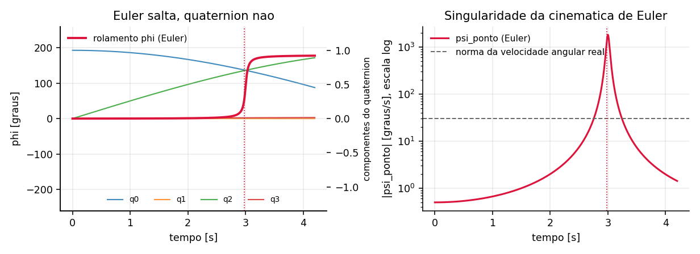
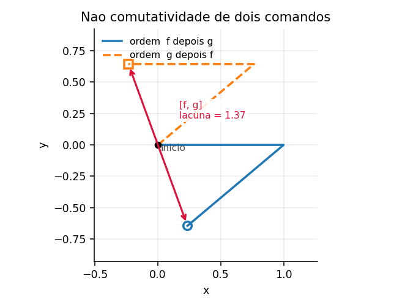
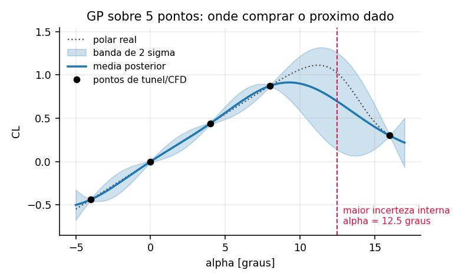
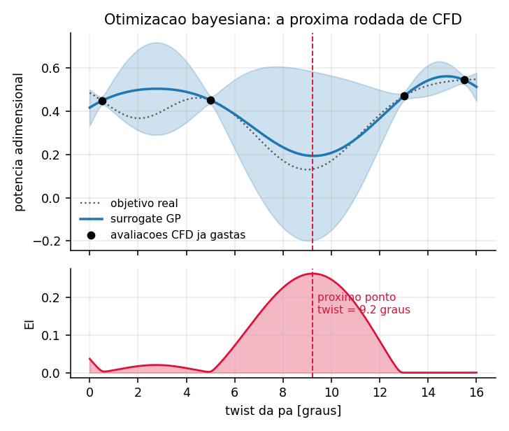
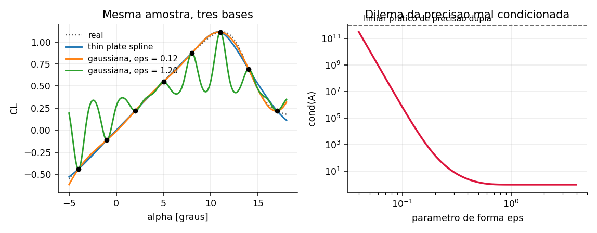

Sumário
- Introdução: Ferramentas Analíticas de Análise
- 1. Geometria de Controle, Cinemática e Álgebras de Rotação
- 2. Modelagem Probabilística, Processos Estocásticos e Otimização Sob Incerteza
- 3. Amostragem Avançada, Sequências Estocásticas e Otimização Heurística
- 4. Estimativa de Estado, Filtragem Não-Linear e Teoria da Informação
- 5. Decomposição de Ordem Reduzida, Operadores Dinâmicos e Caos
- 6. Processamento Multiescala de Sinais, Análise Espectral e Homologia
- 7. Arquitetura de Dados Integrada e Fluxos Aeroespaciais
Introdução: Ferramentas Analíticas de Análise
A engenharia aeroespacial contemporânea vivencia uma transformação paradigmática em suas ferramentas analíticas. O incremento de complexidade em plataformas modernas — desde veículos de mobilidade urbana elétrica (eVTOL) e aeronaves não tripuladas até foguetes reutilizáveis e veículos hipersônicos — exige abstrações matemáticas que superam as formulações analíticas determinísticas clássicas. A dinâmica de escoamentos altamente não-lineares, a presença de turbulência tridimensional, as incertezas estocásticas em parâmetros operacionais e a necessidade de controle geométrico em variedades não-euclidianas demandam uma rigorosa integração entre matemática pura, física teórica e métodos computacionais avançados.
Este repositório analítico compila e estrutura formalmente vinte e um métodos matemáticos e computacionais aplicados à engenharia aeroespacial de maneira inovadora. O objetivo central é munir o projetista e pesquisador aeroespacial de uma visão profunda e unificada: cada formulação é apresentada com seus rigorosos axiomas matemáticos, interpretação física direta de fenômenos de voo/aerodinâmica, aplicações computacionais concretas com trechos de código e análise crítica dos limites de validade.
1. Geometria de Controle, Cinemática e Álgebras de Rotação
Álgebra Geométrica, Quaternions e Cinemática Rígida
Toda aeronave carrega um problema de representação antes de carregar qualquer problema de controle. A atitude de um corpo rígido não é um vetor de três números soltos: é um elemento do grupo SO(3), uma variedade curva de dimensão três que não admite parametrização global sem singularidade. Os ângulos de Euler, que continuam sendo a linguagem natural do piloto e do relatório de ensaio, escondem esse fato até o momento em que a aeronave chega perto da vertical. Ali a parametrização degenera, dois dos três eixos passam a comandar a mesma rotação, e a cinemática que o computador de bordo integra explode. É o fenômeno conhecido como gimbal lock, e ele custou uma reprogramação de emergência na plataforma inercial da Apollo 11. O mesmo computador deu, durante a descida final, outra lição sobre a divisão de trabalho entre piloto e máquina: sobrecarregado de tarefas, disparou repetidamente os alarmes 1202 de transbordo executivo em plena fase crítica do pouso, e a decisão rápida do controle de missão de seguir com a descida virou caso canônico de engenharia de software embarcado sob restrição extrema [1]. David Mindell documenta em Digital Apollo essa negociação entre humano e máquina, e ela ilustra que a representação da atitude dentro do computador é uma decisão de projeto tão crítica quanto qualquer superfície aerodinâmica.
Quaternions e álgebra geométrica resolvem o problema pelo caminho certo, que é abandonar a tentativa de descrever uma variedade curva com três coordenadas e aceitar uma representação redundante. William Rowan Hamilton chegou aos quaternions em 1843 procurando uma álgebra de divisão em três dimensões, que não existe, e descobriu que em quatro ela existe. William Clifford generalizou a construção em 1878, mostrando que quaternions são apenas a subálgebra par da álgebra geométrica de três dimensões [2]. A escolha aqui não é estética: é a única forma de propagar atitude sem que a matemática invente uma singularidade que a física não tem.
Formulação Matemática
Um quaternion unitário codifica uma rotação de ângulo \(\theta\) em torno do eixo unitário \(\hat{u}\) pela relação
\[q = \cos\frac{\theta}{2} + \hat{u}\,\sin\frac{\theta}{2}, \qquad \|q\| = 1,\]
e a rotação de um vetor \(v\) é o produto conjugado
\[v' = q \, v \, q^{*}.\]
O fator \(\theta/2\) não é um detalhe de normalização. Ele expressa que o grupo dos quaternions unitários, isomorfo a \(SU(2)\), é um recobrimento duplo de \(SO(3)\): cada rotação física corresponde a dois quaternions, \(q\) e \(-q\). Essa redundância é o preço da suavidade, e é ela que elimina a singularidade.
Na álgebra geométrica a mesma rotação aparece como um rotor gerado pela exponencial de um bivetor \(B\), o elemento que representa o plano de rotação em vez do eixo:
\[R = \exp\left(-\frac{B\theta}{2}\right) = \cos\frac{\theta}{2} - B\sin\frac{\theta}{2}, \qquad v' = R\,v\,\tilde{R}.\]
A vantagem conceitual do bivetor é que rotação em \(n\) dimensões sempre acontece num plano, nunca em torno de um eixo. O eixo é uma coincidência de três dimensões, onde o complemento ortogonal de um plano é uma reta. Quem pensa em planos generaliza para quatro dimensões e para o espaço de configuração de um manipulador sem reescrever nada.
A peça que interessa ao engenheiro de voo é a cinemática. Dada a velocidade angular no referencial do corpo \(\omega = [p, q, r]^T\), a atitude evolui segundo a equação diferencial linear
\[\dot{q} = \frac{1}{2}\,\Omega(\omega)\,q, \qquad \Omega(\omega) = \begin{bmatrix} 0 & -p & -q & -r \\ p & 0 & r & -q \\ q & -r & 0 & p \\ r & q & -p & 0 \end{bmatrix}.\]
Compare com a cinemática de Euler na sequência 321:
\[\dot{\phi} = p + (q\sin\phi + r\cos\phi)\tan\theta, \qquad \dot{\theta} = q\cos\phi - r\sin\phi, \qquad \dot{\psi} = \frac{q\sin\phi + r\cos\phi}{\cos\theta}.\]
O contraste é a moral do capítulo inteiro. A equação do quaternion é linear em \(q\), tem coeficientes limitados pela velocidade angular e não contém nenhuma divisão. A de Euler tem \(\tan\theta\) e \(1/\cos\theta\), ambos divergentes em \(\theta = \pm 90^\circ\), e a divergência aparece mesmo quando a velocidade angular física é modesta. A singularidade é da parametrização, não do voo.
Interpretação Física
A figura abaixo compara as duas propagações numa cabragem quase pura de 30 graus por segundo, com uma guinada residual de meio grau por segundo, cruzando a vertical em três segundos.

À esquerda, o ângulo de rolamento calculado por Euler salta de zero a cento e oitenta graus em poucos milissegundos, enquanto as quatro componentes do quaternion atravessam o mesmo instante como senoides suaves, sem notar que algo aconteceu. À direita, a taxa \(\dot{\psi}\) chega a mil e oitocentos graus por segundo num voo cuja velocidade angular real nunca passa de trinta. Nenhum integrador numérico sobrevive a isso com passo fixo, e nenhum filtro que use essa taxa como entrada produz uma estimativa confiável.
O que a redundância compra, fisicamente, é continuidade. Uma trajetória contínua no espaço de atitudes vira uma trajetória contínua nas quatro componentes do quaternion, sempre. Nos três ângulos de Euler ela pode ser descontínua ainda que o movimento seja perfeitamente suave, porque a carta de coordenadas acabou. É a diferença entre um mapa que cobre o globo e um mapa que cobre tudo menos os polos.
Exemplo Aeronáutico
O caso de uso mais direto é a propagação de atitude num sistema de referência inercial de UAV ou eVTOL, onde os giroscópios entregam \(\omega\) a algumas centenas de hertz e o estimador precisa manter atitude entre correções de magnetômetro e GNSS. A implementação cabe em vinte linhas.
import numpy as np
def matriz_omega(w):
p, q, r = w
return np.array([[0, -p, -q, -r],
[p, 0, r, -q],
[q, -r, 0, p],
[r, q, -p, 0]])
def propagar(q, w, dt):
"""Um passo de integracao da cinematica de atitude, com renormalizacao."""
q = q + 0.5 * dt * matriz_omega(w) @ q
return q / np.linalg.norm(q)
def para_matriz(q):
q0, q1, q2, q3 = q
return np.array([
[1 - 2*(q2*q2 + q3*q3), 2*(q1*q2 - q0*q3), 2*(q1*q3 + q0*q2)],
[2*(q1*q2 + q0*q3), 1 - 2*(q1*q1 + q3*q3), 2*(q2*q3 - q0*q1)],
[2*(q1*q3 - q0*q2), 2*(q2*q3 + q0*q1), 1 - 2*(q1*q1 + q2*q2)]])
q = np.array([1.0, 0.0, 0.0, 0.0])
w = np.deg2rad([0.0, 30.0, 0.5]) # cabragem com guinada residual
for _ in range(int(3.0 / 2e-4)):
q = propagar(q, w, 2e-4)
print(np.rad2deg(np.arcsin(2 * (q[0]*q[2] - q[3]*q[1])))) # theta perto de 90 graus
print(abs(np.linalg.det(para_matriz(q)) - 1.0)) # ortogonalidade preservadaA renormalização a cada passo é obrigatória, e não por preciosismo numérico. O erro de truncamento do integrador tira \(q\) da esfera unitária, e um quaternion de norma diferente de um não representa rotação alguma: representa rotação mais escala. Sem a divisão pela norma, a matriz de atitude reconstruída deixa de ser ortogonal e o sistema passa a esticar vetores que deveria apenas girar.
Um segundo uso, menos óbvio, é a interpolação. O SLERP, proposto por Ken Shoemake [3], interpola entre duas atitudes ao longo do arco de círculo máximo da esfera unitária, com velocidade angular constante. É o que permite gerar trajetórias de referência de atitude para um controlador de transição de eVTOL sem gerar picos de taxa artificiais, que é exatamente o que a interpolação linear de ângulos de Euler produz.
Limites de Validade
O recobrimento duplo, que resolve a singularidade, cria o problema do sinal. Como \(q\) e \(-q\) são a mesma atitude, qualquer erro de atitude calculado por subtração ingênua pode acusar uma diferença de trezentos e sessenta graus onde não há diferença nenhuma. Filtros que estimam atitude precisam trabalhar com o erro multiplicativo, \(\delta q = q_{\text{est}}^{*} \otimes q_{\text{ref}}\), forçando a parte escalar a ser positiva antes de qualquer comparação. Ignorar isso produz um estimador que diverge em metade das inicializações e converge na outra metade, com um padrão de falha que parece aleatório e não é.
A segunda armadilha é a convenção. Existem duas ordens de multiplicação em uso (Hamilton e JPL), duas posições possíveis para a parte escalar, e duas interpretações da rotação (ativa, que gira o vetor, e passiva, que gira o referencial). São oito combinações, todas publicadas, todas defensáveis, e misturar duas delas produz um código que funciona para rotações pequenas e falha em manobras agressivas. Fixar a convenção por escrito [4] no início do projeto custa dez minutos e economiza semanas.
Por fim, a atitude é apenas metade do problema de corpo rígido. Posição e orientação juntas vivem em \(SE(3)\), e há situações, notadamente cinemática de manipuladores e formação de múltiplos veículos, em que tratar as duas separadamente perde o acoplamento. Nesses casos os quaternions duais, ou a álgebra geométrica conforme, são a extensão natural, e o capítulo seguinte, sobre derivadas de Lie, é a porta de entrada formal para esse território.
Derivadas de Lie, Campos Vetoriais e Geometria de Controle
A pergunta que a derivada de Lie responde é operacional, não abstrata: se o sistema evolui segundo um campo vetorial \(f(x)\), quanto uma saída medida \(h(x)\) muda ao longo desse fluxo? A resposta importa porque define quantas vezes é preciso derivar uma saída até que o comando apareça explicitamente nela, e essa contagem determina se o sistema pode ser linearizado por realimentação, se um estado pode ser reconstruído a partir dos sensores disponíveis, e se dois comandos aplicados em ordem trocada levam ao mesmo lugar.
O formalismo vem da geometria diferencial de Sophus Lie e chegou ao controle pelos trabalhos de Alberto Isidori [5] e pela sistematização de Slotine e Li [6]. Ele é a linguagem certa quando o modelo é genuinamente não linear e a linearização em torno de um ponto de operação deixa de bastar, o que em aeronáutica acontece cedo: transição de eVTOL, envelope de alto ângulo de ataque e acoplamento entre eixos são todos regimes onde o jacobiano num ponto conta uma parte pequena da história.
Formulação Matemática
Para um campo vetorial \(f: \mathbb{R}^n \to \mathbb{R}^n\) e uma função escalar \(h: \mathbb{R}^n \to \mathbb{R}\), a derivada de Lie é a derivada direcional de \(h\) ao longo de \(f\):
\[L_f h(x) = \nabla h(x) \cdot f(x) = \sum_{i=1}^{n} \frac{\partial h}{\partial x_i} f_i(x).\]
Iterando, \(L_f^k h = L_f(L_f^{k-1} h)\), com \(L_f^0 h = h\). Considere agora o sistema afim no controle, que é a forma em que a maioria dos modelos de voo se escreve:
\[\dot{x} = f(x) + g(x)u, \qquad y = h(x).\]
Derivando a saída sucessivamente no tempo, \(\dot{y} = L_f h + (L_g h)u\). Se \(L_g h \equiv 0\) numa vizinhança, o comando ainda não apareceu, e é preciso derivar de novo. O menor inteiro \(\rho\) tal que \(L_g L_f^{\rho-1} h \neq 0\) é o grau relativo, e nele a saída finalmente responde ao comando:
\[y^{(\rho)} = L_f^{\rho} h(x) + L_g L_f^{\rho-1} h(x)\, u.\]
O ganho prático é imediato. Escolhendo
\[u = \frac{1}{L_g L_f^{\rho-1} h(x)}\left(v - L_f^{\rho} h(x)\right),\]
a dinâmica entrada-saída vira \(y^{(\rho)} = v\), uma cadeia de integradores. Isso é a linearização por realimentação, e ela não é uma aproximação: é uma mudança exata de coordenadas mais uma realimentação, válida em toda a região onde \(L_g L_f^{\rho-1} h\) não se anula.
O segundo objeto é o colchete de Lie de dois campos,
\[[f, g] = \frac{\partial g}{\partial x}f - \frac{\partial f}{\partial x}g,\]
que mede o quanto os dois fluxos deixam de comutar. Se \([f,g] = 0\), aplicar \(f\) e depois \(g\) leva ao mesmo estado que aplicar \(g\) e depois \(f\). Quando o colchete é não nulo, a diferença entre as duas ordens é, em primeira ordem para manobras curtas de duração \(t\), proporcional a \(t^2[f,g]\). O conjunto de direções alcançáveis por colchetes sucessivos define a distribuição de acessibilidade, e o teorema de Chow garante que, se ela varre todo o espaço, o sistema é controlável mesmo tendo menos comandos do que estados.
Interpretação Física
O colchete de Lie tem uma tradução física que qualquer motorista conhece. Um veículo com restrição não holonômica, como um carro ou um triciclo, não consegue se deslocar lateralmente: os comandos disponíveis são avançar e girar. Ainda assim, todo mundo estaciona em paralelo. A manobra de estacionar é literalmente o colchete de Lie: avançar, girar, recuar, desgirar, uma sequência cujo resultado líquido é um deslocamento lateral que nenhum comando isolado produz.

A figura mostra as duas ordens da mesma sequência de quatro comandos, partindo do mesmo estado. A separação entre os pontos finais é lateral, exatamente a direção que o colchete prevê e exatamente a direção que os comandos individuais não alcançam.
Em dinâmica de voo o mesmo mecanismo aparece com nomes diferentes. Acoplamento inercial entre rolamento e arfagem, o momento de guinada gerado por uma sequência de comandos de rolamento em alta taxa, e o deslocamento residual de uma manobra de recuperação executada em ordem trocada são todos manifestações de colchetes não nulos. Um piloto de ensaio chama isso de acoplamento cruzado, e a derivada de Lie é a forma de calcular a magnitude antes do primeiro voo.
Já a derivada de Lie da saída explica por que altitude, velocidade vertical e ângulo de ataque não respondem igualmente ao mesmo comando de profundor. Cada uma tem grau relativo diferente em relação ao comando, e o grau relativo é a medida de quantas integrações separam o comando do efeito observado. Uma saída de grau relativo alto é uma saída lenta e indireta, e tentar controlá-la com ganho alto é a receita clássica de PIO.
Exemplo Aeronáutico
O cálculo numérico dos dois objetos é simples e vale ter à mão. O exemplo abaixo usa o modelo cinemático do veículo não holonômico, com \(f\) representando o avanço e \(g\) a guinada.
import numpy as np
def f(x): # avancar na direcao do nariz
return np.array([np.cos(x[2]), np.sin(x[2]), 0.0])
def g(x): # girar em torno do proprio eixo
return np.array([0.0, 0.0, 1.0])
def jacobiano(campo, x, h=1e-6):
J = np.zeros((3, 3))
for j in range(3):
e = np.zeros(3); e[j] = h
J[:, j] = (campo(x + e) - campo(x - e)) / (2 * h)
return J
def colchete(f, g, x):
return jacobiano(g, x) @ f(x) - jacobiano(f, x) @ g(x)
def lie(campo, h, x, eps=1e-6):
grad = np.array([(h(x + eps*e) - h(x - eps*e)) / (2*eps)
for e in np.eye(len(x))])
return grad @ campo(x)
x0 = np.array([0.0, 0.0, 0.0])
print(colchete(f, g, x0)) # [0, -1, 0]: deslocamento lateral puro
print(lie(f, lambda x: x[1], x0)) # 0: avancar nao muda y quando theta = 0O primeiro resultado é o ponto central. O colchete aponta na direção lateral, com magnitude unitária, apesar de nenhum dos dois campos ter componente lateral alguma. A direção proibida é alcançável pela combinação, e é isso que o teorema de Chow formaliza.
Numa aplicação de voo real, o cálculo que importa é o do grau relativo de cada saída candidata. Num modelo longitudinal de eVTOL em transição, com estados de velocidade, ângulo de ataque, taxa de arfagem e atitude, testar \(L_g h\), \(L_g L_f h\) e \(L_g L_f^2 h\) para cada saída candidata revela quais delas são linearizáveis por realimentação com o conjunto de atuadores disponível e quais exigem redefinir a saída controlada. Esse é um cálculo de mesa, feito antes de qualquer simulação, e ele elimina arquiteturas de controle inviáveis antes de custarem tempo de projeto.
Limites de Validade
O formalismo inteiro pressupõe suavidade. Campos vetoriais precisam ser diferenciáveis tantas vezes quanto o grau relativo exigir, e sistemas de voo reais têm saturação de atuador, zona morta, atrito seco e chaveamento de lei de controle, nenhum deles suave. Perto dessas descontinuidades a teoria não erra por pouco: ela simplesmente não se aplica, e a linearização por realimentação calculada em cima de um modelo idealizado pode comandar deflexões que o atuador não entrega.
O segundo limite é a robustez. A lei de linearização por realimentação cancela a não linearidade usando o modelo, e o cancelamento é exato apenas se o modelo for exato. Erro em derivada aerodinâmica, que em projeto preliminar chega facilmente a vinte por cento, vira erro de cancelamento e reaparece como dinâmica residual. Na prática a linearização por realimentação quase nunca é usada sozinha, e sim como camada interna sob um controlador robusto que absorve o resíduo, tipicamente controle por modos deslizantes ou uma malha \(H_\infty\).
Existe ainda a questão da dinâmica zero. Quando o grau relativo é menor que a ordem do sistema, a linearização deixa de fora uma dinâmica interna que não aparece na saída, e essa dinâmica pode ser instável. Um sistema de fase não mínima linearizado por realimentação estabiliza a saída enquanto os estados internos divergem em silêncio, o que é uma forma particularmente desagradável de falha porque os instrumentos indicam normalidade até o fim.
Este formalismo é também o que cumpre, aqui, a promessa feita no capítulo anterior sobre \(SE(3)\) e quaternions duais. O território é o grupo de Lie das transformações rígidas, e a porta de entrada formal são exatamente os objetos desta seção: \(SO(3)\) é um grupo de Lie cuja álgebra \(\mathfrak{so}(3)\) organiza os campos de rotação, o colchete de Lie mede a não comutação que a cinemática espacial herda, e a exponencial de um campo vetorial generaliza para seis graus de liberdade a construção do rotor que gerava rotações puras. Os quaternions duais aparecem nesse mapa como uma escolha de coordenadas para esse território, não como o território em si: oito números redundantes que carregam posição e atitude juntas, suaves onde ângulos e vetores de transição separados se atrapalham. Quem domina derivada de Lie, grau relativo e colchete tem o vocabulário exato para dizer quando essa parametrização é adequada e quando ela esconde restrições não holonômicas do veículo.
2. Modelagem Probabilística, Processos Estocásticos e Otimização Sob Incerteza
Representar a atitude sem singularidades é metade do problema de voar num mundo incerto. A outra metade aparece quando o próprio modelo da física carrega incerteza: poucos pontos de ensaio, tolerâncias de fabricação, rajadas não previstas. Os métodos deste capítulo tratam essa segunda metade, construindo superfícies de resposta que declaram o quanto confiam em si mesmas e usando essa confiança para decidir onde gastar a próxima simulação.
Processos Gaussianos e Kriging
O problema que o processo gaussiano resolve é o problema econômico central da aerodinâmica computacional. Cada ponto de uma polar custa horas de CFD ou uma ocupação de túnel de vento, o espaço de entrada tem ângulo de ataque, Mach, Reynolds e geometria, e o orçamento permite algumas dezenas de avaliações. A pergunta relevante não é apenas qual o valor de \(C_L\) num ponto não amostrado, mas o quanto se pode confiar nesse valor, porque é a confiança que decide onde gastar a próxima simulação.
O método nasceu na geoestatística sul-africana dos anos cinquenta, com Danie Krige estimando teor de ouro a partir de sondagens esparsas, e foi formalizado por Georges Matheron. A migração para engenharia aconteceu porque a estrutura de covariância pode codificar física: a hipótese de que respostas em condições de voo próximas são correlacionadas, e o quanto essa correlação decai, é uma afirmação sobre o escoamento, não sobre estatística.
Formulação Matemática
Um processo gaussiano é uma distribuição sobre funções, definida por uma função média e uma função de covariância [7]:
\[f(x) \sim \mathcal{GP}\big(m(x),\, k(x, x')\big),\]
com a propriedade de que qualquer coleção finita de valores \([f(x_1), \dots, f(x_n)]\) tem distribuição normal multivariada. Observando com ruído, \(y = f(x) + \epsilon\), \(\epsilon \sim \mathcal{N}(0, \sigma_n^2)\), a distribuição conjunta entre observações e um ponto de predição é
\[\begin{bmatrix} \mathbf{y} \\ f_* \end{bmatrix} \sim \mathcal{N}\left(0, \begin{bmatrix} \mathbf{K} + \sigma_n^2 \mathbf{I} & \mathbf{k}_* \\ \mathbf{k}_*^T & k_{**} \end{bmatrix}\right),\]
e o condicionamento gaussiano entrega a posterior em forma fechada:
\[\mu_*(x_*) = \mathbf{k}_*^T (\mathbf{K} + \sigma_n^2 \mathbf{I})^{-1} \mathbf{y},\]
\[\sigma_*^2(x_*) = k_{**} - \mathbf{k}_*^T (\mathbf{K} + \sigma_n^2 \mathbf{I})^{-1} \mathbf{k}_*.\]
Dois fatos merecem atenção. Primeiro, a média posterior é linear nas observações: é uma combinação ponderada dos \(y\) medidos, com pesos ditados pela covariância. Segundo, e mais importante, a variância posterior não depende de \(\mathbf{y}\). Ela depende apenas de onde os pontos foram colocados, o que significa que é possível planejar um experimento e saber a incerteza resultante antes de rodar uma única simulação.
Os hiperparâmetros do kernel são ajustados maximizando a verossimilhança marginal logarítmica,
\[\log p(\mathbf{y}|X) = -\frac{1}{2}\mathbf{y}^T(\mathbf{K}+\sigma_n^2\mathbf{I})^{-1}\mathbf{y} - \frac{1}{2}\log|\mathbf{K}+\sigma_n^2\mathbf{I}| - \frac{n}{2}\log 2\pi,\]
expressão que embute uma navalha de Occam automática: o primeiro termo premia o ajuste aos dados, o segundo penaliza modelos flexíveis demais.
A escolha do kernel é a escolha da física. O kernel exponencial quadrático produz funções infinitamente diferenciáveis, hipótese forte demais para escoamento com separação. A família Matérn, com parâmetro \(\nu = 3/2\) ou \(\nu = 5/2\), gera funções com diferenciabilidade finita e é quase sempre a escolha honesta em aerodinâmica:
\[k_{5/2}(r) = \sigma_f^2\left(1 + \frac{\sqrt{5}r}{\ell} + \frac{5r^2}{3\ell^2}\right)\exp\left(-\frac{\sqrt{5}r}{\ell}\right).\]
Interpretação Física
O comprimento característico \(\ell\) do kernel é uma afirmação sobre a escala em que o escoamento muda de comportamento. Um \(\ell\) de cinco graus em ângulo de ataque diz que a resposta a doze graus informa pouco sobre a resposta a dezoito, o que é fisicamente correto se houver estol entre os dois. Um kernel anisotrópico, com comprimento próprio para cada entrada, diz algo ainda mais específico: que a resposta varia rápido em Mach na região transônica e devagar em Reynolds, que é exatamente o que a física do escoamento compressível prevê.

A figura mostra o comportamento que torna o método útil. Cinco pontos de túnel, colocados em menos quatro, zero, quatro, oito e dezesseis graus, definem uma média posterior que segue a parte linear da polar com fidelidade. Entre oito e dezesseis graus, justamente onde o estol acontece e onde não há nenhuma medição, a banda de dois sigma se alarga visivelmente, e o máximo de incerteza interna cai em doze graus e meio. O modelo não sabe onde está o estol, e diz que não sabe. Essa é a informação acionável: a próxima rodada de CFD deve ser em torno de doze graus, não distribuída uniformemente pelo domínio.
Exemplo Aeronáutico
A implementação numericamente correta usa decomposição de Cholesky em vez de inversão explícita, que é mais rápida e muito mais estável.
import numpy as np
def kernel_rbf(a, b, ell, sf2):
d2 = (a[:, None] - b[None, :]) ** 2
return sf2 * np.exp(-0.5 * d2 / ell ** 2)
def gp_posterior(X, y, Xs, ell=4.5, sf2=0.5, sn2=1e-4):
K = kernel_rbf(X, X, ell, sf2) + sn2 * np.eye(len(X))
L = np.linalg.cholesky(K)
alpha = np.linalg.solve(L.T, np.linalg.solve(L, y))
Ks = kernel_rbf(X, Xs, ell, sf2)
mu = Ks.T @ alpha
v = np.linalg.solve(L, Ks)
var = np.diag(kernel_rbf(Xs, Xs, ell, sf2)) - np.sum(v * v, axis=0)
return mu, np.sqrt(np.clip(var, 1e-12, None))
alpha_deg = np.array([-4.0, 0.0, 4.0, 8.0, 16.0])
cl = np.array([-0.45, 0.00, 0.44, 0.87, 0.30])
grid = np.linspace(-5.0, 17.0, 400)
mu, sd = gp_posterior(alpha_deg, cl, grid)
dentro = (grid > alpha_deg.min()) & (grid < alpha_deg.max())
proximo = grid[dentro][np.argmax(sd[dentro])]
print(f"proximo ensaio em alpha = {proximo:.1f} graus")A restrição ao interior do domínio amostrado não é cosmética. A variância posterior cresce sem limite fora do envelope dos dados, e o ponto de máxima incerteza global é sempre a borda. Extrapolação num processo gaussiano é uma operação em que o modelo devolve a prior, ou seja, devolve o que foi assumido antes de qualquer dado, e tratar isso como predição é o erro mais comum no uso do método.
Uma extensão que vale mencionar é o co-kriging multi-fidelidade, no qual dados baratos de painel ou de XFOIL e dados caros de CFD entram no mesmo modelo com uma relação de correlação estimada. O modelo aprende que o código barato acerta a tendência e erra o nível, e usa os poucos pontos caros para corrigir o viés. É a forma mais eficiente conhecida de gastar orçamento de simulação em projeto preliminar.
Limites de Validade
O custo computacional cresce com o cubo do número de pontos, por causa da fatoração de uma matriz densa \(n \times n\), e a memória com o quadrado. Acima de alguns milhares de observações o método deixa de ser prático na forma exata, e é preciso recorrer a aproximações esparsas por pontos indutores ou a decomposições estruturadas.
A limitação conceitual é mais séria. O processo gaussiano padrão é estacionário: assume que a estrutura de correlação é a mesma em todo o domínio. Uma polar não é estacionária, porque a região linear e a região pós estol têm comportamentos qualitativamente distintos, e um único \(\ell\) precisa escolher entre suavizar demais o estol ou oscilar demais na região linear. As saídas são kernels não estacionários, particionamento do domínio por regime, ou modelos hierárquicos com um kernel por regime e uma transição aprendida.
Há ainda a questão da calibração. Um processo gaussiano sempre devolve uma banda de incerteza, e a banda é confiável apenas se o kernel e os hiperparâmetros estiverem corretos. Um modelo mal especificado produz bandas estreitas e erradas, que é pior do que não ter banda nenhuma, porque induz confiança onde não deveria haver. Validação cruzada sobre a cobertura empírica da banda, verificando se noventa e cinco por cento dos pontos retidos caem dentro do intervalo de dois sigma, é obrigatória antes de usar a incerteza para decidir qualquer coisa.
Otimização Bayesiana
A otimização bayesiana responde a uma pergunta que a otimização clássica não formula: qual é o próximo experimento a fazer, dado tudo que já se sabe. Quando cada avaliação da função objetivo custa oito horas de CFD, o número de avaliações é o recurso escasso, e um método que gasta mil chamadas para achar o ótimo é inútil por mais elegante que seja sua taxa de convergência assintótica.
A ideia é de Harold Kushner, nos anos sessenta, e ganhou a forma moderna com o algoritmo EGO de Jones, Schonlau e Welch em 1998 [8]. A estrutura tem duas peças: um modelo probabilístico substituto, quase sempre um processo gaussiano, e uma função de aquisição que transforma média e variância desse modelo numa decisão sobre onde amostrar em seguida.
Formulação Matemática
O laço é curto. A cada iteração, ajusta-se o surrogate aos dados \(D_n = \{(x_i, y_i)\}_{i=1}^{n}\) e escolhe-se
\[x_{n+1} = \arg\max_{x \in \mathcal{X}} a(x \mid D_n),\]
onde \(a\) é a função de aquisição. O ponto sutil é que maximizar \(a\) é barato, porque \(a\) depende apenas do surrogate, não da função cara.
A aquisição mais usada é a melhoria esperada. Para um problema de minimização com melhor valor corrente \(f_{\text{best}}\), a melhoria é \(I(x) = \max(0, f_{\text{best}} - f(x))\), e como \(f(x)\) é gaussiano sob o surrogate, o valor esperado tem forma fechada:
\[\text{EI}(x) = (f_{\text{best}} - \mu(x))\,\Phi(z) + \sigma(x)\,\phi(z), \qquad z = \frac{f_{\text{best}} - \mu(x)}{\sigma(x)},\]
com \(\Phi\) e \(\phi\) a distribuição acumulada e a densidade da normal padrão. A decomposição da fórmula é a chave para entendê-la. O primeiro termo é a explotação do que já se sabe sobre a função: cresce onde a média prevista é boa, usando a informação das avaliações já pagas. O segundo termo é a exploração do desconhecido: cresce onde a incerteza é alta, mesmo que a média seja ruim. A EI equilibra os dois sem que nenhum parâmetro precise ser ajustado à mão, e essa ausência de parâmetro livre é a razão de sua popularidade.
A alternativa mais simples é o limite de confiança inferior, \(\text{LCB}(x) = \mu(x) - \kappa\sigma(x)\), cujo parâmetro \(\kappa\) controla explicitamente a agressividade da exploração e para o qual existem garantias teóricas de arrependimento sublinear. Uma terceira família baseada em teoria da informação [9] escolhe o ponto que mais reduz a entropia da distribuição sobre a localização do ótimo, o que é conceitualmente mais direto e computacionalmente mais caro.
Interpretação Física
O que a otimização bayesiana faz, na prática de projeto, é formalizar o que um projetista experiente faz por intuição: não gastar a próxima simulação onde já se sabe a resposta, nem onde a resposta é claramente ruim, mas onde há chance real de descobrir algo que mude a decisão.

A figura mostra o estado do algoritmo depois de quatro avaliações de CFD na otimização do twist de uma pá de rotor. O painel superior traz o surrogate com sua banda, e o inferior a melhoria esperada. As quatro avaliações já gastas foram em meio grau, cinco, treze e quinze graus e meio, e nenhuma delas caiu perto do ótimo real, que está em nove. A EI, mesmo assim, aponta com clareza para nove graus e dois décimos, porque é ali que a combinação de média baixa e incerteza alta maximiza a chance de melhoria. Note que a EI é praticamente nula perto dos pontos já avaliados, onde a incerteza colapsou, e também nas bordas, onde a média prevista é ruim demais para compensar a incerteza.
Exemplo Aeronáutico
O laço completo, reaproveitando o processo gaussiano do capítulo anterior, cabe em poucas linhas.
import numpy as np
from scipy.stats import norm
def melhoria_esperada(mu, sd, melhor):
z = (melhor - mu) / sd
return (melhor - mu) * norm.cdf(z) + sd * norm.pdf(z)
def rodar_cfd(twist_deg):
"""Placeholder da avaliacao cara: aqui entraria a chamada ao solver."""
return (0.55
- 0.42 * np.exp(-0.5 * ((twist_deg - 9.0) / 2.2) ** 2)
- 0.18 * np.exp(-0.5 * ((twist_deg - 2.0) / 1.4) ** 2))
X = np.array([0.5, 5.0, 13.0, 15.5])
y = np.array([rodar_cfd(x) for x in X])
grid = np.linspace(0.0, 16.0, 400)
for iteracao in range(6):
mu, sd = gp_posterior(X, y, grid, ell=2.6, sf2=0.05)
ei = melhoria_esperada(mu, sd, y.min())
x_novo = grid[np.argmax(ei)]
X = np.append(X, x_novo)
y = np.append(y, rodar_cfd(x_novo))
print(f"iteracao {iteracao}: twist = {x_novo:5.2f}, melhor = {y.min():.4f}")Seis iterações levam o algoritmo à vizinhança do ótimo, que está em nove graus exatos, com erro de dois décimos de grau e um total de dez avaliações caras. Uma varredura em grade com a mesma resolução exigiria cento e sessenta, e um método de gradiente partindo de meio grau convergiria para o mínimo local em dois graus, cujo valor de potência é quase três vezes o do ótimo global.
Na aplicação real, o objetivo raramente é escalar. Otimizar uma pá envolve potência, ruído e margem de estol simultaneamente, e a extensão natural é a versão multiobjetivo, na qual a aquisição mede o ganho esperado no hipervolume da frente de Pareto. Restrições caras, como uma margem de flutter que só o solver aeroelástico conhece, entram como modelos gaussianos próprios, e a aquisição é multiplicada pela probabilidade de viabilidade estimada.
Limites de Validade
A dimensão é o limite duro. A otimização bayesiana padrão funciona bem até dez ou vinte variáveis de projeto e degrada rápido acima disso, porque a incerteza do surrogate deixa de ser informativa quando o espaço é vasto demais para ser coberto por dezenas de pontos. Parametrizações de asa com centenas de variáveis exigem redução de dimensão antes, por subespaços ativos ou por autoencoders, e a qualidade da redução passa a dominar a qualidade da otimização.
A segunda vulnerabilidade é a confiança mal calibrada do surrogate. Se o kernel subestima a variabilidade da função, a incerteza colapsa cedo demais e o algoritmo para de explorar, convergindo com convicção para um ótimo local. O sintoma é característico: a EI cai a valores desprezíveis em todo o domínio depois de poucas iterações, e o algoritmo passa a reamostrar quase o mesmo ponto. A correção é reajustar hiperparâmetros a cada iteração e impor um piso ao comprimento característico.
Por fim, a otimização bayesiana é sequencial por natureza, o que conflita com clusters de CFD que rodam dezenas de casos em paralelo. As versões em lote existem e funcionam, penalizando pontos próximos aos já selecionados na mesma rodada, mas o ganho por avaliação cai em relação ao caso puramente sequencial. É uma troca entre tempo de calendário e número de simulações, e a resposta certa depende de qual dos dois é o recurso escasso no projeto.
Radial Basis Functions e Interpolação Espalhada
Nem todo problema de superfície de resposta precisa de incerteza. Quando os dados são resultado de simulação determinística, sem ruído, e o que se quer é uma superfície que passe exatamente pelos pontos e seja barata de avaliar milhões de vezes dentro de um laço de otimização ou de uma simulação em tempo real, o aparato probabilístico do processo gaussiano vira custo sem contrapartida. As funções de base radial são a ferramenta certa nesse regime.
O método foi introduzido por Rolland Hardy em 1971 para interpolar topografia a partir de pontos espalhados, e ganhou fundamento teórico com os trabalhos de Charles Micchelli sobre condições de invertibilidade. A propriedade que o torna singular é a indiferença à dimensão e à estrutura da amostra: enquanto splines tensoriais exigem grade regular e degradam combinatorialmente com o número de dimensões, uma RBF trabalha com nuvens arbitrárias de pontos em qualquer dimensão sem mudança de formulação.
Formulação Matemática
O interpolador é uma soma de funções que dependem apenas da distância aos centros, acrescida de um termo polinomial:
\[s(x) = \sum_{i=1}^{N} w_i\, \varphi\big(\|x - c_i\|\big) + p(x),\]
com os pesos determinados pela condição de interpolação exata \(s(x_j) = y_j\), o que gera o sistema linear
\[\begin{bmatrix} A & P \\ P^T & 0 \end{bmatrix} \begin{bmatrix} w \\ \lambda \end{bmatrix} = \begin{bmatrix} y \\ 0 \end{bmatrix}, \qquad A_{ij} = \varphi(\|x_i - x_j\|).\]
O bloco polinomial cumpre duas funções. Garante reprodução exata de polinômios de baixo grau, o que importa quando a resposta tem tendência linear clara, e assegura que o sistema seja invertível para bases condicionalmente definidas positivas como a multiquádrica e a thin plate spline.
As escolhas usuais de \(\varphi\) dividem-se em dois grupos. As bases com parâmetro de forma, gaussiana \(\varphi(r) = e^{-(\varepsilon r)^2}\) e multiquádrica \(\varphi(r) = \sqrt{1 + (\varepsilon r)^2}\), oferecem convergência espectral quando a função subjacente é analítica, ao custo de exigir a calibração de \(\varepsilon\). As bases sem parâmetro, poliharmônicas \(\varphi(r) = r^3\) e thin plate spline \(\varphi(r) = r^2 \log r\), convergem apenas algebricamente, mas não têm nada a ajustar e são numericamente muito melhor comportadas.
A thin plate spline tem uma caracterização variacional que explica seu nome e sua robustez: entre todas as funções que passam pelos pontos dados, ela é a que minimiza a energia de flexão
\[\mathcal{E}[s] = \int_{\mathbb{R}^2} \left( \frac{\partial^2 s}{\partial x^2}\right)^2 + 2\left(\frac{\partial^2 s}{\partial x \partial y}\right)^2 + \left(\frac{\partial^2 s}{\partial y^2}\right)^2 dx\, dy,\]
que é literalmente a energia elástica de uma placa fina forçada a passar pelos pontos. A analogia física não é decorativa: ela prevê o comportamento do interpolador, que é suave onde pode e curva onde os dados obrigam.
Interpretação Física
O parâmetro de forma \(\varepsilon\) governa a largura de cada função de base e, com ela, o alcance da influência de cada ponto amostrado. Um \(\varepsilon\) grande produz bases estreitas, nas quais cada ponto influencia apenas sua vizinhança imediata. Entre um ponto amostrado e outro, o interpolador oscila como uma sucessão de picos. Um \(\varepsilon\) pequeno produz bases largas e quase colineares entre si, o interpolador fica suave e a matriz \(A\) fica mal condicionada.

A figura mostra os dois lados dessa moeda. À esquerda, a mesma amostra de oito pontos interpolada por três bases distintas: a thin plate spline e a gaussiana com \(\varepsilon\) pequeno reproduzem a polar de forma aceitável, enquanto a gaussiana com \(\varepsilon = 1{,}2\) oscila violentamente entre os dados, produzindo picos de \(C_L\) que a física não tem. À direita, o número de condição da matriz de interpolação em função de \(\varepsilon\): ele cresce por dez ordens de grandeza quando \(\varepsilon\) diminui, cruzando o limiar prático da precisão dupla.
Esse é o dilema da precisão mal condicionada, formulado por Robert Schaback [10]: os valores de \(\varepsilon\) que dariam melhor aproximação teórica são exatamente os que tornam o sistema linear insolúvel em aritmética de ponto flutuante. Não é um defeito de implementação, é uma propriedade estrutural do método. As saídas conhecidas passam por algoritmos que evitam formar \(A\) explicitamente, como o RBF-QR, ou por aceitar uma base sem parâmetro de forma e viver com a convergência algébrica.
Exemplo Aeronáutico
A aplicação canônica em aeronáutica não é interpolação de polar, e sim deformação de malha. Num acoplamento aeroelástico, a estrutura entrega deslocamentos em alguns milhares de nós do modelo de elementos finitos, e a malha de CFD, com milhões de nós e topologia completamente diferente, precisa ser deformada de forma consistente. As RBF fazem essa transferência sem exigir qualquer correspondência entre as duas malhas, o que é a razão de serem o padrão da indústria [11] nessa tarefa.
import numpy as np
from scipy.interpolate import RBFInterpolator
nos_estrutura = np.array([[0.0, 0.0], [1.0, 0.0], [2.0, 0.0],
[0.0, 1.0], [1.0, 1.0], [2.0, 1.0]])
desloc = np.array([0.000, 0.012, 0.048, 0.001, 0.015, 0.052]) # saida do solver de FEM
gx, gy = np.meshgrid(np.linspace(0, 2, 120), np.linspace(0, 1, 60))
nos_cfd = np.column_stack([gx.ravel(), gy.ravel()]) # malha de CFD, muito mais fina
transferir = RBFInterpolator(nos_estrutura, desloc,
kernel="thin_plate_spline", degree=1)
desloc_cfd = transferir(nos_cfd)
print(f"deslocamento maximo transferido: {desloc_cfd.max():.4f} m")
print(f"erro nos nos estruturais: {np.abs(transferir(nos_estrutura) - desloc).max():.2e}")O erro nos nós estruturais sai da ordem do épsilon de máquina, como
deve ser num interpolador exato, e o campo transferido para a malha de
CFD é suave por construção. A opção degree=1 inclui o termo
polinomial linear, que garante que um deslocamento de corpo rígido da
estrutura seja transferido exatamente, sem deformação espúria da malha.
Omitir esse detalhe é um erro clássico, e ele se manifesta como uma
carga aerodinâmica fantasma que aparece quando a asa apenas se desloca
sem fletir.
Limites de Validade
A matriz \(A\) é densa, e resolver o sistema custa \(O(N^3)\), com avaliação posterior custando \(O(N)\) por ponto. Para as dezenas de milhares de centros de um problema de deformação de malha industrial isso é proibitivo na forma direta, e a prática é usar bases de suporte compacto, as funções de Wendland [12], que produzem matrizes esparsas, ou métodos de decomposição hierárquica que aproximam blocos distantes por posto baixo.
A ausência de estimativa de incerteza é uma limitação e não um detalhe. A RBF devolve um número e nada mais, e nada no método sinaliza quando a consulta caiu numa região sem dados. Existe uma ponte formal, já que a interpolação por RBF é a média posterior de um processo gaussiano com kernel correspondente e ruído nulo, o que significa que a maquinaria de incerteza está disponível se for necessária. Quando ela for necessária, porém, o método a ser usado é o processo gaussiano do capítulo anterior.
Por fim, a interpolação exata é uma virtude apenas quando os dados são exatos. Diante de dados de ensaio com ruído, forçar a superfície a passar por cada ponto é ajustar ruído, e o interpolador oscila para acomodar erros de medição. A correção é a regularização, adicionando \(\lambda I\) à diagonal de \(A\), o que transforma a interpolação em suavização e reintroduz um parâmetro que precisa ser escolhido, tipicamente por validação cruzada.
Redes Neurais + GPs e Deep Kernel Learning
O problema que o deep kernel learning [13] (DKL) resolve é o de construir um processo gaussiano sobre entradas que não têm uma métrica óbvia, como a geometria completa de um aerofólio ou de uma pá de rotor descrita por uma dezena de parâmetros de controle de uma spline. Um kernel comum mede distância euclidiana entre vetores de entrada, e essa distância trata como equivalentes duas geometrias que estão perto em coordenadas de projeto mas têm comportamento aerodinâmico completamente distinto perto do estol, ou como distantes duas geometrias que na prática produzem a mesma polar. A rede neural existe para aprender antes a métrica certa, e o processo gaussiano existe para transformar essa métrica em uma predição calibrada, com banda de incerteza.
A origem remonta a Radford Neal [14], que mostrou em 1996 que uma rede neural de uma camada, com largura tendendo a infinito, converge para um processo gaussiano exato. O resultado é elegante mas inútil em projeto real, porque nenhuma rede é infinitamente larga, e foi só com o trabalho de Wilson, Hu, Salakhutdinov e Xing em 2016 que a ideia virou ferramenta prática: usar uma rede finita, de largura comum, apenas para aprender a representação, e reservar a camada gaussiana final para a parte que precisa de incerteza calibrada.
Formulação Matemática
A rede mapeia a entrada bruta, por exemplo o vetor de coordenadas de controle de uma spline de aerofólio, para um espaço latente de dimensão menor,
\[z = \phi(x; \theta),\]
e o kernel do processo gaussiano passa a operar sobre esse espaço em vez de sobre \(x\) diretamente,
\[k_{DKL}(x, x') = k\big(\phi(x; \theta),\, \phi(x'; \theta)\big).\]
Os parâmetros da rede \(\theta\) e os hiperparâmetros do kernel são ajustados juntos, maximizando a mesma verossimilhança marginal logarítmica que aparece no processo gaussiano padrão,
\[\log p(\mathbf{y} \mid X, \theta) = -\frac{1}{2}\mathbf{y}^T K_\theta^{-1} \mathbf{y} - \frac{1}{2}\log|K_\theta| - \frac{n}{2}\log 2\pi.\]
O ponto que costuma ficar implícito em explicações rápidas do método é de onde vem o gradiente que treina a rede. A derivada da verossimilhança marginal em relação a qualquer parâmetro que apareça dentro do kernel tem a forma fechada padrão de processos gaussianos,
\[\frac{\partial}{\partial \theta_j} \log p(\mathbf{y}\mid X,\theta) = \frac{1}{2}\operatorname{tr}\!\Big[(\alpha\alpha^{\top} - K_\theta^{-1})\,\frac{\partial K_\theta}{\partial \theta_j}\Big], \qquad \alpha = K_\theta^{-1}\mathbf{y},\]
e, como o kernel depende de \(\theta\) apenas através de \(z = \phi(x;\theta)\), a regra da cadeia decompõe essa derivada em duas partes calculáveis separadamente,
\[\frac{\partial K_\theta}{\partial \theta_j} = \frac{\partial k}{\partial z}\bigg|_{z = \phi(x;\theta)} \cdot \frac{\partial \phi(x;\theta)}{\partial \theta_j}.\]
O segundo fator é exatamente o que a retropropagação [15] já sabe calcular para qualquer rede. Isso é o que torna o DKL prático: a verossimilhança marginal do processo gaussiano funciona como uma função de perda comum, e o treinamento conjunto de rede e kernel não exige nenhuma maquinaria nova além do que já existe para treinar redes.
Interpretação Física
O espaço latente \(z\) é, na prática, uma representação comprimida da geometria que preserva o que importa aerodinamicamente e descarta o que não importa. Se a rede aprendeu bem, duas asas com espessura relativa e curvatura semelhantes ficam próximas em \(z\) mesmo que suas coordenadas de controle originais sejam distantes, e o processo gaussiano herda essa proximidade certa na hora de estimar incerteza. O ganho sobre um processo gaussiano comum é que a métrica deixa de ser escolhida a priori pelo engenheiro, arbitrada por uma norma euclidiana sobre parâmetros de spline que não tem significado físico direto, e passa a ser aprendida dos dados.
Esse ganho aparece de forma mensurável na própria verossimilhança marginal: um kernel que opera sobre uma métrica melhor explica os dados com uma penalidade de complexidade menor, e é justamente essa quantidade, não a intuição do projetista, que decide se vale a pena adicionar a camada de rede.
Exemplo Aeronáutico
O teste mais direto de que o DKL vale o esforço extra é comparar a verossimilhança marginal do mesmo conjunto de dados sob um kernel na coordenada bruta e sob o mesmo kernel operando num espaço latente de três traços, aqui aproximados por uma base fixa em vez de uma rede treinada de fato, para manter o exemplo autocontido. Os dados são seis perfis de uma família paramétrica, descritos por uma única razão camber-espessura normalizada \(\xi\), com \(L/D\) medido em túnel de vento e um estol claro para \(\xi\) grande.
import numpy as np
from scipy.optimize import minimize_scalar
def embed(xi): # espaco latente de 3 tracos, substituto de uma rede treinada
return np.stack([xi, xi ** 2, np.sin(2.0 * xi)], axis=1)
def kernel(a, b, ell):
d2 = ((a[:, None, :] - b[None, :, :]) ** 2).sum(-1)
return np.exp(-0.5 * d2 / ell ** 2)
def log_ml(ell, Z, y, sn2=1e-3):
K = kernel(Z, Z, ell) + sn2 * np.eye(len(Z))
L = np.linalg.cholesky(K)
alpha = np.linalg.solve(L.T, np.linalg.solve(L, y))
return 0.5 * y @ alpha + np.sum(np.log(np.diag(L))) + 0.5 * len(y) * np.log(2 * np.pi)
xi = np.array([-1.5, -0.8, -0.2, 0.3, 0.9, 1.6]) # razao camber/espessura normalizada
lift_drag = np.array([18.0, 22.5, 24.0, 23.2, 19.5, 12.0]) # L/D com estol para xi grande
Z, X = embed(xi), xi.reshape(-1, 1)
ell_raw = minimize_scalar(lambda l: log_ml(np.exp(l), X, lift_drag), bounds=(-3, 3), method='bounded').x
ell_lat = minimize_scalar(lambda l: log_ml(np.exp(l), Z, lift_drag), bounds=(-3, 3), method='bounded').x
print(f"nll_raw={log_ml(np.exp(ell_raw), X, lift_drag):.3f} nll_lat={log_ml(np.exp(ell_lat), Z, lift_drag):.3f}")O resultado é nll_raw = 318.620 contra
nll_lat = 306.635: a mesma família de kernel, ajustada
sobre o espaço latente de três traços, explica os dados com uma
log-verossimilhança negativa quase 12 unidades menor, uma diferença
grande demais para ser ruído de otimização. Para o projetista, essa
comparação é a decisão prática: adotar a camada extra de representação
só se compensa quando ela reduz de forma clara a verossimilhança
negativa no conjunto de validação, não apenas quando parece razoável em
teoria. Sem esse teste, é fácil adicionar complexidade que piora a
calibração da incerteza sem melhorar a predição.
Limites de Validade
O ponto fraco do método é que ele delega a honestidade física à rede, e uma rede treinada só com dados baratos, como milhares de rodadas de XFOIL, pode aprender um embedding enviesado, que nenhuma calibração de incerteza do processo gaussiano posterior consegue corrigir depois. Um sintoma comum é a rede colapsar geometrias fisicamente distintas para pontos próximos em \(z\) porque elas eram parecidas nos dados baratos, mas não nos caros: nesse caso a banda de incerteza fica estreita e errada exatamente onde deveria estar larga.
A saída prática é regularizar o espaço latente, limitando sua dimensão e impondo penalidade de norma sobre os pesos da rede, validar o embedding contra os poucos dados caros disponíveis antes de confiar na incerteza, e considerar arquiteturas híbridas com múltiplos kernels quando o regime de escoamento muda de forma abrupta, como na transição de escoamento colado para separado. Em dimensão de entrada pequena, abaixo de cinco ou seis parâmetros de projeto, o ganho do DKL sobre um processo gaussiano comum com kernel anisotrópico costuma ser marginal, e o custo extra de treinar e validar uma rede raramente compensa.
Chaos Polynomial Expansion (PCE) e Propagação de Incerteza
O polynomial chaos expansion resolve um problema distinto do processo gaussiano: em vez de interpolar uma resposta cara em função de variáveis de projeto, ele propaga uma incerteza de entrada já conhecida, como tolerância de fabricação, dispersão de massa ou rajada atmosférica, através de um modelo para obter a distribuição completa da saída sem repetir Monte Carlo ingênuo milhares de vezes.
A ideia remonta ao caos homogêneo de Norbert Wiener, de 1938, formulado para entradas gaussianas [16], e só foi generalizada para qualquer distribuição de entrada por Xiu e Karniadakis em 2002 [17], que mostraram qual família de polinômios ortogonais corresponde a cada distribuição comum: Hermite para gaussiana, Legendre para uniforme, Laguerre para exponencial. Essa correspondência é o que torna o método aplicável a variáveis de engenharia, que raramente são gaussianas.
Formulação Matemática
A resposta aleatória \(Y\), saída de um modelo aerodinâmico ou de desempenho sob uma entrada incerta \(\xi\), é expandida numa base de polinômios ortogonais escolhida de acordo com a distribuição de \(\xi\) [18],
\[Y = \sum_{k=0}^{P} \alpha_k \Psi_k(\xi),\]
com a base satisfazendo a condição de ortonormalidade sob a medida de probabilidade de \(\xi\),
\[\mathbb{E}[\Psi_i(\xi)\Psi_j(\xi)] = \delta_{ij}.\]
A pergunta natural é de onde vêm os coeficientes \(\alpha_k\). A resposta sai de multiplicar a expansão por \(\Psi_j(\xi)\) e tomar o valor esperado dos dois lados: a ortogonalidade elimina todos os termos exceto \(k=j\), e sobra a projeção de Galerkin
\[\alpha_k = \mathbb{E}\big[Y\,\Psi_k(\xi)\big],\]
que na prática é calculada por quadratura gaussiana na medida certa, sem nenhum ajuste iterativo. Uma vez que os coeficientes estão em mãos, média e variância da resposta saem diretamente deles, sem integrar nada de novo,
\[\mathbb{E}[Y] = \alpha_0, \qquad \text{Var}(Y) = \sum_{k=1}^{P} \alpha_k^2.\]
Quando a incerteza de entrada tem mais de uma dimensão, digamos \(\xi = (\xi_1, \xi_2)\) para folga de fabricação e rajada, a base vira um produto tensorial \(\Psi_{k_1,k_2}(\xi_1,\xi_2) = \Psi_{k_1}(\xi_1)\Psi_{k_2}(\xi_2)\), e a mesma ortogonalidade separa a variância total por fonte de incerteza, dando o índice de Sobol [19] de primeira ordem de cada entrada,
\[S_i = \frac{\sum_{k_i>0,\; k_j=0\;(j\neq i)} \alpha_k^2}{\text{Var}(Y)}.\]
Isso é uma análise de sensibilidade completa obtida como subproduto da mesma expansão que já foi calculada para propagar a incerteza, sem custo adicional de avaliação do modelo.
A quadratura gaussiana tensorial usada acima fica cara rapidamente à medida que o número de variáveis incertas simultâneas cresce, porque o número de nós é o produto do número de nós por dimensão. A alternativa não intrusiva, batizada de colocação por pontos por Hosder, Walters e Perez em 2006 [20], troca a integração por quadratura por um ajuste de mínimos quadrados: avalia-se o modelo caro num conjunto de pontos amostrados, por hipercubo latino ou aleatório, e resolve-se
\[\hat{\alpha} = (\Psi^\top \Psi)^{-1} \Psi^\top \mathbf{Y}, \qquad \Psi_{ij} = \Psi_j\big(\xi^{(i)}\big),\]
onde cada linha de \(\Psi\) é a base ortogonal avaliada num dos pontos amostrados e \(\mathbf{Y}\) é o vetor das respostas do modelo caro nesses mesmos pontos. A vantagem é desacoplar o número de avaliações do modelo caro da ordem e da dimensão da expansão, escolhendo livremente quantos pontos amostrar dentro do orçamento disponível, ao custo de perder a garantia de exatidão que a quadratura gaussiana oferece para polinômios de grau baixo, e de introduzir um risco de mau condicionamento em \(\Psi^\top \Psi\) quando o número de amostras é próximo do número de termos da base.
Interpretação Física
Cada \(\Psi_k\) representa um padrão de resposta a um tipo de flutuação da entrada: o modo de primeira ordem capta uma tendência linear, o de segunda ordem uma curvatura, e um termo cruzado como \(\Psi_{k_1}\Psi_{k_2}\) capta uma interação genuína entre duas fontes de incerteza, que nenhuma das duas sozinha explicaria. Quando o coeficiente de um modo de ordem alta é grande, isso é o sinal matemático de que a resposta física reage de forma fortemente não linear àquela fonte de incerteza, o que raramente é óbvio antes de rodar a expansão, e o índice de Sobol traduz esse sinal em uma fração de responsabilidade sobre a variância total, na linguagem que um gerente de projeto entende sem precisar ler a matemática por trás.
Essa decomposição também informa diretamente como alocar o orçamento de projeto de tolerância. Se a variância de uma resposta crítica é dominada por um único modo de primeira ordem, apertar a tolerância daquela variável de entrada reduz a dispersão da saída de forma quase proporcional, e o cálculo de quanto apertar sai direto do coeficiente \(\alpha_k\) correspondente. Se, ao contrário, um termo cruzado de ordem alta domina, apertar tolerâncias isoladamente rende pouco, porque o problema é a interação entre duas fontes, não cada uma sozinha, e a solução passa a ser controlar a correlação entre as duas variáveis de fabricação em vez de controlar cada uma no limite. Essa mesma maquinaria de propagação e decomposição de variância é a base da análise conduzida em Validação Estocástica de Dinâmica de Voo, que aplica a propagação de incerteza às equações completas do movimento em vez de a um modelo de resposta isolado.
Exemplo Aeronáutico
Um caso concreto é propagar, simultaneamente, a dispersão de arrasto por folga de fabricação (\(\xi_1\)) e por rajada atmosférica (\(\xi_2\)), obtendo média, variância total e a fração de cada fonte na variância, sem rodar milhares de simulações de Monte Carlo.
import numpy as np
from numpy.polynomial import legendre as leg
def resposta(xi1, xi2): # arrasto extra por folga de fabricacao (xi1) e rajada (xi2)
return 1.0 + 0.15 * xi1 + 0.05 * xi1 ** 2 + 0.25 * xi2 + 0.06 * xi1 * xi2
ordem = 2
nos, pesos = leg.leggauss(6)
N1, N2 = np.meshgrid(nos, nos, indexing='ij')
P1, P2 = np.meshgrid(pesos, pesos, indexing='ij')
def phi(k, x): # legendre ortonormal sob medida uniforme em [-1, 1]
base = np.zeros(ordem + 1); base[k] = 1.0
return leg.legval(x, base) * np.sqrt(2 * k + 1)
coef = {}
for k1 in range(ordem + 1):
for k2 in range(ordem + 1):
if k1 + k2 > ordem:
continue
integrando = P1 * P2 * resposta(N1, N2) * phi(k1, N1) * phi(k2, N2)
coef[(k1, k2)] = np.sum(integrando) / 4.0 # expectativa sob medida uniforme
media = coef[(0, 0)]
var_total = sum(c ** 2 for chave, c in coef.items() if chave != (0, 0))
var_xi1 = sum(c ** 2 for (k1, k2), c in coef.items() if k1 > 0 and k2 == 0)
var_xi2 = sum(c ** 2 for (k1, k2), c in coef.items() if k2 > 0 and k1 == 0)
print(f"media={media:.4f} var={var_total:.5f} sobol_xi1={var_xi1/var_total:.3f} sobol_xi2={var_xi2/var_total:.3f}")A saída é media = 1.0167, var = 0.02896,
sobol_xi1 = 0.267 e sobol_xi2 = 0.719, com o
restante da variância (cerca de 1,4%) atribuído à interação entre as
duas fontes. Uma verificação por Monte Carlo bruto com dois milhões de
amostras confirma média e variância até a quarta casa decimal, ao custo
de trinta e seis avaliações do modelo no PCE (a grade tensorial de seis
nós por dimensão) contra dois milhões no Monte Carlo. Para o projetista,
o número que importa é o par de índices de Sobol: quase três quartos da
dispersão de arrasto vêm da rajada, não da fabricação, o que redireciona
o esforço de controle de qualidade e de projeto de tolerância exatamente
para onde ele reduz mais incerteza por unidade de custo.
Há uma segunda leitura, menos óbvia, no fato de a interação entre as duas fontes responder por apenas 1,4% da variância total. Isso significa que, para fins de projeto de tolerância, é seguro tratar folga de fabricação e rajada como fontes independentes e somar suas contribuições isoladamente, em vez de exigir uma análise conjunta cara que capture o acoplamento entre as duas. Essa é exatamente a informação que uma auditoria de tolerância precisa antes de simplificar um modelo de dispersão: descartar o termo cruzado é uma aproximação justificada aqui, e a própria expansão, ao expor o tamanho desse termo, é quem autoriza a simplificação, em vez de o engenheiro assumi-la por conveniência.
Limites de Validade
A expansão perde eficiência rapidamente quando a resposta tem uma descontinuidade, como um estol abrupto ou um choque que aparece só para alguns valores da variável aleatória, porque polinômios globais representam mal quinas e saltos, produzindo oscilações de Gibbs que inflam a variância estimada de forma artificial. A saída nesses casos é o PCE por elementos múltiplos, que particiona o domínio da variável aleatória e ajusta uma expansão separada em cada pedaço, tratando a fronteira como uma singularidade conhecida em vez de tentar suavizá-la com mais termos.
A segunda limitação é a maldição da dimensionalidade na própria base: o número de termos de uma expansão de ordem \(p\) em \(d\) dimensões cresce como \(\binom{p+d}{d}\), e a partir de seis ou sete variáveis incertas simultâneas o custo de construir e avaliar a base supera o ganho sobre Monte Carlo puro, a menos que se recorra a esquemas esparsos que descartam termos de interação de ordem alta a priori, aceitando o risco de subestimar uma interação que, na prática, seja relevante.
3. Amostragem Avançada, Sequências Estocásticas e Otimização Heurística
O capítulo anterior mostrou como modelar uma resposta cara e decidir sobre ela com incerteza calibrada. Este trata do lado que alimenta esse modelo: escolher onde amostrar, com qual sequência e com qual busca, quando o orçamento de avaliações é a variável mais escassa do projeto.
Quasi-Monte Carlo e Sequências de Baixa Discrepância
O quasi-Monte Carlo (QMC) resolve o mesmo problema de estimar médias e dispersões de uma resposta cara sob incerteza de entrada que o PCE ataca, mas por um caminho diferente: em vez de assumir uma forma polinomial para a resposta, ele ataca diretamente a lentidão do Monte Carlo comum, cujo erro cai apenas como \(O(N^{-1/2})\), independente da dimensão do problema e do quão suave a resposta seja. Quando cada avaliação é uma rodada de CFD ou um ensaio em túnel, essa taxa é cara demais para ser aceitável, e a origem do método está exatamente na busca, iniciada nos anos sessenta, por sequências determinísticas que preenchem o espaço melhor do que números aleatórios conseguem por acaso.
Formulação Matemática
Sequências de baixa discrepância, como a de Sobol e a de Halton, preenchem o espaço de entrada de forma mais uniforme do que pontos aleatórios independentes. A discrepância estrela mede o quanto a fração de pontos numa caixa \(B\) se desvia do volume esperado dessa caixa,
\[D_N^*(x_1, \dots, x_N) = \sup_{B} \left| \frac{1}{N}\sum_{i=1}^{N} \mathbb{1}_B(x_i) - \text{vol}(B) \right|,\]
e a desigualdade de Koksma-Hlawka liga esse valor ao erro de integração [21],
\[\left| \frac{1}{N}\sum_{i=1}^{N} f(x_i) - \int f \, dx \right| \le V(f)\, D_N^*,\]
onde \(V(f)\) é a variação total da função no sentido de Hardy-Krause. Essa variação raramente é escrita por extenso, mas vale fazê-lo uma vez, porque é ela que decide se a desigualdade é útil ou vazia: soma-se, sobre todo subconjunto não vazio de dimensões \(u \subseteq \{1,\dots,d\}\), a integral do valor absoluto da derivada parcial mista de \(f\) nessas dimensões,
\[V_{HK}(f) = \sum_{\emptyset \neq u \subseteq \{1,\dots,d\}} \int_{[0,1]^{|u|}} \left| \frac{\partial^{|u|} f}{\partial x_u} \right| dx_u.\]
Uma função que varia suavemente em cada dimensão e não tem interações fortes entre elas tem \(V_{HK}(f)\) pequena, e é exatamente aí que a desigualdade de Koksma-Hlawka entrega uma garantia útil. Sequências bem construídas atingem \(D_N^* = O((\log N)^d / N)\), o que dá a comparação de taxas que justifica trocar Monte Carlo por QMC,
\[\epsilon_{MC}(N) = O\!\left(N^{-1/2}\right), \qquad \epsilon_{QMC}(N) = O\!\left(\frac{(\log N)^d}{N}\right),\]
taxa que supera o Monte Carlo comum para \(N\) suficientemente grande, mesmo em dimensão moderada, mas cujo termo \((\log N)^d\) cresce com a dimensão nominal \(d\) do problema e, para \(N\) modesto e \(d\) de duas dezenas ou mais, pode tornar a garantia assintótica pessimista demais para ser útil na prática.
O problema prático dessa garantia é que ela não vem com um intervalo de confiança, porque a sequência é determinística: rodar duas vezes dá o mesmo resultado. A solução, chamada QMC escramblado ou randomizado, embaralha a sequência preservando sua baixa discrepância, e permite estimar o erro do jeito que a estatística usual faz, rodando \(R\) sequências escrambladas independentes e tratando as médias resultantes como amostras,
\[\widehat{\text{Var}}\big[\bar{I}\big] = \frac{1}{R(R-1)} \sum_{r=1}^{R} \big(\bar{I}_r - \bar{I}\big)^2,\]
onde \(\bar{I}_r\) é a média estimada pela sequência \(r\) e \(\bar{I}\) é a média das médias. É esse desvio padrão entre sequências escrambladas, não uma fórmula teórica de discrepância, que dá o erro utilizável em projeto.
A comparação de taxas acima parece condenar o QMC em problemas aeronáuticos de dimensão moderada a alta, como uma simulação de dispersão de missão com uma dezena de variáveis incertas. Na prática isso raramente acontece, porque a taxa \((\log N)^d/N\) é um limite de pior caso sobre toda função com variação de Hardy-Krause finita, e a maioria das respostas de engenharia não usa de fato todas as \(d\) dimensões da mesma forma. A dimensão efetiva no sentido de superposição, formalizada por Caflisch, Morokoff e Owen em 1997 [22], mede quantas variáveis, na prática, bastam para explicar quase toda a variância da resposta,
\[d_S = \min\left\{ s \;:\; \sum_{|u| \le s} \sigma_u^2 \;\ge\; 0.99\, \text{Var}(f) \right\},\]
onde \(\sigma_u^2\) é a parcela de variância atribuída ao subconjunto de variáveis \(u\), a mesma decomposição de Sobol que aparece na propagação de incerteza por PCE. Quando \(d_S\) é pequeno, dois ou três mesmo que a dimensão nominal \(d\) seja dez, o comportamento prático do QMC segue a taxa favorável de uma função de baixa dimensão efetiva, não o pior caso pessimista da fórmula assintótica. É essa lacuna entre dimensão nominal e dimensão efetiva, e não uma falha da teoria, que explica por que o QMC funciona tão bem em problemas aeronáuticos de aparência alta-dimensional: a resposta física raramente depende de todas as variáveis de entrada com a mesma força, e quase sempre um pequeno número de interações de baixa ordem já captura a maior parte da variância.
Interpretação Física
A vantagem física de uma sequência de baixa discrepância é evitar os buracos e aglomerados que uma amostragem aleatória inevitavelmente produz em poucas centenas de pontos. Num espaço de quatro ou cinco variáveis, ângulo de ataque, Mach, Reynolds e massa, por exemplo, pontos aleatórios deixam regiões inteiras sem cobertura por puro acaso, e é exatamente ali que uma dispersão de desempenho pode ser subestimada sem que ninguém perceba, porque a amostra nunca visitou a combinação de condições que produziria o pior caso.
O escramblamento, por sua vez, resolve um problema de confiança do engenheiro: sem ele, o método entrega um único número sem margem de erro, o que é inaceitável quando a decisão depende de saber se a dispersão estimada é confiável ou é artefato de uma única realização da sequência.
Exemplo Aeronáutico
Um uso direto é estimar a dispersão de eficiência propulsiva de um eVTOL variando simultaneamente ângulo de ataque, Mach, Reynolds e massa, comparando o erro padrão obtido por QMC escramblado contra o erro padrão de Monte Carlo comum com o mesmo orçamento total de avaliações.
import numpy as np
from scipy.stats import qmc
def desempenho(x): # proxy de eficiencia propulsiva de eVTOL
alpha, mach, re, massa = x.T
return 1.0 - 0.3 * alpha - 0.2 * mach + 0.1 * re - 0.4 * massa
def erro_padrao_qmc(n_seq=8, m=8): # m: 2**m pontos por sequencia escramblada
medias = []
for s in range(n_seq):
amostrador = qmc.Sobol(d=4, scramble=True, seed=s)
amostra = amostrador.random_base2(m=m)
medias.append(desempenho(amostra).mean())
return np.mean(medias), np.std(medias, ddof=1) / np.sqrt(n_seq)
media_qmc, erro_qmc = erro_padrao_qmc()
rng = np.random.default_rng(0)
medias_mc = [desempenho(rng.uniform(size=(256, 4))).mean() for _ in range(8)]
erro_mc = np.std(medias_mc, ddof=1) / np.sqrt(8)
print(f"qmc: media={media_qmc:.4f} erro_padrao={erro_qmc:.5f}")
print(f"mc : media={np.mean(medias_mc):.4f} erro_padrao={erro_mc:.5f} razao={erro_mc/erro_qmc:.2f}x")O resultado é qmc: media=0.6000 erro_padrao=0.00001
contra mc: media=0.6003 erro_padrao=0.00293, uma razão de
quase quinhentas vezes (483,7x) a favor do QMC com o mesmo orçamento de
2048 avaliações. A resposta usada aqui é linear nas quatro variáveis, o
caso mais favorável possível ao QMC, e ainda assim a diferença ilustra
por que trocar Monte Carlo por sequências de baixa discrepância é quase
sempre a decisão certa quando a resposta subjacente não tem
descontinuidade: o custo de implementação é trivial, e o ganho de
precisão por avaliação cara é real.
O caso também ilustra a dimensão efetiva na prática. A resposta é uma soma de termos lineares independentes, sem nenhuma interação entre ângulo de ataque, Mach, Reynolds e massa, o que significa que sua dimensão efetiva de superposição é um, mesmo com dimensão nominal quatro: toda a variância é explicada pelos efeitos de primeira ordem. É por isso que a razão de erro observada é tão favorável ao QMC, e é também por isso que o projetista não deveria esperar a mesma vantagem numa resposta com forte interação entre variáveis, como o desempenho de um rotor perto do estol, onde ângulo de ataque e número de Reynolds interagem de forma não separável; nesse caso, a dimensão efetiva sobe, e o ganho do QMC sobre Monte Carlo se aproxima do previsto pela taxa assintótica, ainda favorável mas menos dramático. É essa divisão de trabalho entre amostragem determinística e modelo substituto que sustenta, na prática, a campanha de dispersão descrita em Validação Estocástica de Dinâmica de Voo, onde os dois métodos dividem o mesmo orçamento de simulação.
Limites de Validade
A garantia teórica depende de \(V(f)\) ser finita e razoavelmente pequena, o que falha para funções com descontinuidade forte, como um estol abrupto ou uma transição de regime de choque, onde a variação total pode ser grande o bastante para tornar o limite de Koksma-Hlawka inútil na prática, mesmo que o método continue funcionando empiricamente bem na maioria dos casos observados. Nesse regime, o ganho sobre Monte Carlo comum diminui, e a decisão de qual método usar deveria ser verificada empiricamente, comparando a variância entre sequências escrambladas contra a variância de Monte Carlo no mesmo problema, em vez de assumida por analogia com o caso suave.
A segunda armadilha é usar a mesma sequência sem escramblamento para estimar o próprio erro, porque uma sequência determinística não oferece intervalo de confiança direto: a prática correta é sempre gerar múltiplas versões escrambladas e usar a variância entre elas como estimativa de erro, exatamente como no exemplo acima, nunca reportar apenas a média de uma única sequência como se fosse exata.
Heurísticas de Otimização: CMA-ES, DE, PSO e Simulated Annealing
Essas quatro heurísticas resolvem o mesmo problema central: otimizar uma função objetivo cara, ruidosa ou não diferenciável, como o desempenho de um rotor obtido por CFD ou o ganho de uma lei de controle avaliado por simulação não linear, situação em que métodos baseados em gradiente exato simplesmente não têm gradiente para usar, e onde a superfície de custo pode ter múltiplos mínimos locais rasos separados por platôs. A origem é heterogênea: o recozimento simulado nasceu em 1983 de uma analogia direta com a física estatística do resfriamento de metais [23], enquanto CMA-ES, DE e PSO surgiram entre o fim dos anos oitenta e os anos noventa dentro da comunidade de computação evolutiva, sem relação direta com nenhuma física preexistente.
Formulação Matemática
O CMA-ES amostra uma população a partir de uma gaussiana cuja média e covariância são adaptadas a cada geração [24],
\[x_{k+1} \sim m_k + \sigma_k\, \mathcal{N}(0, C_k),\]
de modo que a matriz de covariância \(C_k\) aprende a forma local do vale de otimização, alongando-se na direção em que a função custo varia pouco.
A evolução diferencial [25] (DE) segue uma lógica mais simples, sem estimar covariância nenhuma: cada novo candidato nasce de uma mutação que soma a um membro da população a diferença escalada entre outros dois membros, escolhidos ao acaso na mesma geração,
\[v_i = x_{r_1} + F\,(x_{r_2} - x_{r_3}), \qquad r_1 \neq r_2 \neq r_3 \neq i,\]
e o vetor mutante é então combinado com o indivíduo original por um crossover binomial, que decide componente a componente se herda do mutante ou do original,
\[u_{i,j} = \begin{cases} v_{i,j}, & \text{se } \operatorname{rand}_j \le CR \text{ ou } j = j_{\text{rand}}, \\ x_{i,j}, & \text{caso contrário,} \end{cases}\]
com a condição \(j = j_{\text{rand}}\) garantindo que ao menos uma componente do mutante sempre passe adiante, para que o crossover nunca devolva o próprio pai inalterado. O parâmetro \(F\) controla a amplitude da mutação e \(CR\) a fração esperada de componentes herdadas do mutante, e é a diferença entre dois membros vivos da população, não uma covariância estimada, que informa a escala do passo em cada direção.
O enxame de partículas (PSO), proposto por Kennedy e Eberhart em 1995 [26], parte de uma ideia diferente, inspirada em bandos de pássaros: cada partícula carrega uma velocidade que é atualizada por três forças, a inércia do movimento anterior, a atração pela melhor posição que a própria partícula já visitou, e a atração pela melhor posição já vista por qualquer partícula do enxame,
\[v_{k+1} = w\,v_k + c_1 r_1\,(p_{\text{best}} - x_k) + c_2 r_2\,(g_{\text{best}} - x_k), \qquad x_{k+1} = x_k + v_{k+1},\]
com \(r_1\) e \(r_2\) sorteados a cada iteração e \(w\), \(c_1\), \(c_2\) controlando, respectivamente, o quanto a partícula preserva o rumo que já tinha, o quanto confia na própria experiência e o quanto confia na experiência coletiva do enxame. A posição, ao contrário do CMA-ES e do DE, nunca é reamostrada do zero: ela é sempre um passo a partir de onde a partícula já estava, o que torna o PSO naturalmente mais parecido com uma dinâmica física de partículas com atrito e forças de atração do que com uma busca estatística.
O recozimento simulado (SA) vem de um argumento físico que vale a pena derivar até o fim, porque explica de onde vem o critério de aceitação. Impondo balanço detalhado entre dois estados \(x\) e \(x'\) sob a distribuição de Boltzmann \(\pi(x) \propto e^{-J(x)/T}\), isto é, exigindo que o fluxo de probabilidade de \(x\) para \(x'\) iguale o fluxo inverso,
\[\pi(x)\,P(x \to x') = \pi(x')\,P(x' \to x),\]
a razão das probabilidades de transição precisa satisfazer \(P(x\to x')/P(x'\to x) = e^{-(J(x')-J(x))/T}\), e a escolha de Metropolis [27] que satisfaz essa razão da forma mais simples possível é
\[P(\text{aceitar } x') = \min\left(1,\; e^{-\Delta J / T}\right), \qquad \Delta J = J(x') - J(x),\]
em que a temperatura \(T\) cai ao longo das iterações segundo um cronograma de resfriamento. É esse mesmo balanço detalhado, importado sem alteração da mecânica estatística, que garante que o algoritmo passa mais tempo nos estados de menor custo à medida que \(T\) diminui, sem nunca proibir explicitamente um movimento de piora.
Interpretação Física
Todas essas heurísticas exploram uma superfície de desempenho cheia de vales, platôs e mínimos locais, típica de projeto aerodinâmico ou de leis de controle: pequenas mudanças de geometria ou de ganho podem produzir saltos de desempenho perto do estol, de uma ressonância estrutural ou de uma margem de fase que colapsa. O CMA-ES é indicado quando a superfície tem uma direção de vale clara a ser aprendida, porque a matriz de covariância se adapta a essa direção e acelera a convergência; DE e PSO são mais baratos por avaliação e toleram bem ruído numérico do solver, porque não dependem de uma estimativa precisa de curvatura local; SA é útil quando a paisagem tem muitos mínimos rasos e o risco de ficar preso cedo é alto, precisamente porque a temperatura alta no início permite atravessar barreiras que um método puramente guloso jamais cruzaria.
Exemplo Aeronáutico
Um caso típico é otimizar o passo de uma pá de rotor para minimizar uma perda de eficiência com dois mínimos locais rasos, situação em que um método de busca local, partindo de um chute ruim, corre risco real de convergir para o mínimo errado.
import numpy as np
from scipy.optimize import differential_evolution, minimize
def custo(x): # perda de eficiencia do rotor com minimos locais rasos
passo = x[0]
return (passo - 22.0) ** 2 / 40.0 + 3.0 * np.sin(passo / 2.0) + 0.5 * np.cos(passo)
limites = [(0.0, 45.0)]
de = differential_evolution(custo, limites, popsize=15, maxiter=100, tol=1e-8, seed=0)
local = minimize(custo, x0=[2.0], method='Nelder-Mead') # parte de um chute ruim
grade = np.linspace(0, 45, 4000)
otimo_global = grade[np.argmin([custo([g]) for g in grade])]
print(f"DE : passo={de.x[0]:.2f} custo={de.fun:.4f} avals={de.nfev}")
print(f"Nelder-Mead : passo={local.x[0]:.2f} custo={local.fun:.4f} avals={local.nfev}")
print(f"grade fina : passo={otimo_global:.2f}")O resultado mostra a diferença que importa: a evolução diferencial
encontra passo = 21.99 com custo = -3.5000,
coincidindo com o ótimo global obtido por varredura fina em grade, ao
custo de 302 avaliações. O Nelder-Mead, partindo de um chute inicial de
dois graus, converge em apenas 44 avaliações, mas para em
passo = 9.92 com custo = 0.2997, um mínimo
local quase quatro unidades pior. Para o projetista, a lição é direta:
quando não se sabe se a superfície de custo tem um único vale ou vários,
o custo extra de avaliações da heurística populacional é o preço de não
apostar o projeto inteiro na sorte do chute inicial.
Limites de Validade
Nenhuma dessas heurísticas garante convergência ao ótimo global em tempo finito, e todas dependem de um número de avaliações que rapidamente se torna proibitivo quando cada uma custa uma simulação de CFD inteira: no exemplo acima, 302 avaliações já são caras se cada uma representa horas de solver, e problemas com dezenas de variáveis de projeto facilmente exigem milhares. O sintoma de que o orçamento é insuficiente é a heurística devolver soluções diferentes a cada execução com a mesma configuração, sinal de que a busca não convergiu de fato, apenas parou.
A prática usual em projeto aeroespacial é usar essas heurísticas sobre um surrogate barato, como um processo gaussiano ou uma função de base radial ajustada a poucas dezenas de avaliações caras, em vez de sobre o solver caro diretamente, reservando as poucas avaliações do modelo caro para confirmar o ótimo encontrado no substituto. Quando a superfície tem uma estrutura conhecida, como convexidade aproximada perto do ótimo, um método híbrido que refina o resultado da heurística com um método de gradiente local costuma superar qualquer uma das duas famílias isoladamente.
Teoria dos Números: CRT, Frações Contínuas e Aproximação Diofantina
Um atuador de passo variável de uma pá de rotor, ou uma superfície de comando com curso de vários graus mecânicos por volta de eixo, precisa saber sua posição absoluta desde o instante em que a energia liga, sem depender de uma bateria de backup para um contador multivolta e sem exigir uma manobra de referenciamento a cada partida. O problema gêmeo aparece no projeto da própria caixa de engrenagens: escolher quantos dentes cada estágio deve ter de forma que o desgaste se distribua igualmente entre todos os pares de dentes possíveis, em vez de se concentrar sempre nos mesmos pares. Os dois problemas, superficialmente distintos, são resolvidos pela mesma família de resultados de teoria dos números elementar, com origem no teorema chinês do resto formulado por Sunzi na China do século III e nas frações contínuas estudadas por Euclides e sistematizadas por Euler.
Formulação Matemática
O ponto de partida é a identidade de Bézout: para dois inteiros \(a\) e \(b\), existem inteiros \(u\) e \(v\) tais que
\[au + bv = \gcd(a, b),\]
e quando \(\gcd(a,b) = 1\), isto é, quando \(a\) e \(b\) são coprimos, a identidade garante que \(u\) é o inverso multiplicativo de \(a\) módulo \(b\). É essa reversibilidade que torna a coprimalidade tão valiosa em engenharia: nada se perde na composição, e qualquer combinação de resíduos determina um único resultado. O teorema chinês do resto formaliza isso para um sistema de congruências com módulos coprimos entre si,
\[x \equiv r_i \pmod{n_i}, \quad i = 1, \dots, k,\]
garantindo solução única módulo o produto \(M = n_1 n_2 \cdots n_k\). A construção explícita usa exatamente o inverso de Bézout: definindo \(M_i = M / n_i\) e \(y_i\) como o inverso de \(M_i\) módulo \(n_i\), a solução é
\[x = \left(\sum_{i=1}^{k} r_i M_i y_i\right) \bmod M.\]
Em paralelo, a fração contínua de um número real,
\[x = a_0 + \cfrac{1}{a_1 + \cfrac{1}{a_2 + \cfrac{1}{a_3 + \dots}}},\]
gera convergentes \(p_k/q_k\) por uma recorrência simples, \(p_k = a_k p_{k-1} + p_{k-2}\) e \(q_k = a_k q_{k-1} + q_{k-2}\), que constrói cada aproximação a partir das duas anteriores sem refazer a expansão inteira. O teorema de aproximação diofantina de Dirichlet garante que esses convergentes são as melhores aproximações racionais possíveis para o tamanho do denominador envolvido,
\[\left| x - \frac{p_k}{q_k} \right| < \frac{1}{q_k^2},\]
o que significa que nenhuma outra fração com denominador igual ou menor chega tão perto de \(x\).
Interpretação Física
O teorema chinês do resto resolve o problema do encoder absoluto porque duas engrenagens com dentes coprimos \(n_1\) e \(n_2\), acopladas ao mesmo eixo lento, produzem uma dupla de leituras que se repete somente a cada \(n_1 \times n_2\) voltas. Cada par de resíduos identifica uma volta inteira dentro dessa janela sem ambiguidade, exatamente como usado em encoders absolutos multivolta que dispensam bateria de retenção. A mesma lógica de coprimalidade aparece do lado estrutural: uma engrenagem de dente caçador (hunting tooth), com números de dentes coprimos entre engrenagem e pinhão, garante que cada dente do pinhão eventualmente engrena com todos os dentes da coroa antes de repetir o padrão, distribuindo o desgaste em vez de concentrá-lo sempre no mesmo par de dentes, que é o defeito clássico de razões de redução com fator comum. Já as frações contínuas entram quando a redução mecânica desejada não é um número racional simples: elas entregam o par de inteiros pequenos, e de preferência coprimos, que mais se aproxima do valor real desejado, permitindo escolher a combinação de dentes fabricável sem abrir mão da propriedade de desgaste uniforme.
Exemplo Aeronáutico
Considere um atuador de passo de cauda com duas engrenagens sensoras de \(N_1 = 13\) e \(N_2 = 11\) dentes, coprimas por serem primas entre si, acopladas ao eixo de saída. A janela sem ambiguidade é \(13 \times 11 = 143\) voltas, mais do que suficiente para cobrir o curso total do atuador entre batentes. Em paralelo, o estágio de redução principal do mesmo atuador precisa de uma razão mecânica próxima de \(4{,}83{:}1\), e a expansão em fração contínua entrega candidatos com denominador crescente até encontrar um par de dentes prático.
import numpy as np
def crt_reconstruir(residuos, modulos):
M = int(np.prod(modulos)) # janela sem ambiguidade
x = 0
for r_i, n_i in zip(residuos, modulos):
M_i = M // n_i
x += r_i * M_i * pow(int(M_i), -1, int(n_i)) # inverso modular de M_i
return x % M
N1, N2 = 13, 11 # dentes coprimos das duas engrenagens sensoras
volta_real = 87 # volta absoluta verdadeira do eixo lento
rec = crt_reconstruir([volta_real % N1, volta_real % N2], [N1, N2])
print(f"janela sem ambiguidade: {N1*N2} voltas | reconstruida: {rec} (real: {volta_real})")
def convergentes(x, n=5):
p0, p1, q0, q1, saida = 1, int(np.floor(x)), 0, 1, []
saida.append((p1, q1))
for _ in range(n - 1):
x = 1.0 / (x - np.floor(x))
a = int(np.floor(x))
p0, p1 = p1, a * p1 + p0
q0, q1 = q1, a * q1 + q0
saida.append((p1, q1))
return saida
alvo = 4.83 # reducao mecanica desejada do estagio
for p, q in convergentes(alvo):
print(f"p/q = {p}/{q} = {p/q:.4f} (gcd={np.gcd(p, q)})")O código confirma a reconstrução exata da volta 87 a partir dos dois resíduos, dentro da janela de 143 voltas, sem precisar de nenhum contador com bateria. Para a razão de redução, o convergente \(29/6 = 4{,}8333\) chega a apenas \(0{,}07\%\) do alvo de \(4{,}83\) com denominador pequeno, e como \(\gcd(29,6)=1\) o par também qualifica como conjunto de dente caçador: o projetista fecha os dois requisitos, aproximação numérica e desgaste uniforme, com a mesma escolha de dentes, em vez de tratá-los como compromissos separados.
Limites de Validade
O teorema chinês do resto não tolera degradação suave: um único pulso de dente perdido ou contado a mais corrompe o resíduo inteiro, e a reconstrução devolve uma volta completamente errada, sem qualquer sinalização de que algo deu errado. Isso é o oposto do comportamento de um filtro estatístico, que absorve ruído pequeno com degradação proporcional, e por isso encoders reais que usam o princípio adicionam um bit de paridade ou uma trilha de referência absoluta como verificação cruzada antes de confiar na posição reconstruída.
A escolha de dentes por convergente de fração contínua também ignora, por construção, qualquer restrição que não seja puramente numérica. Fabricabilidade do módulo do dente, tensão de contato admissível, ruído de engrenamento e espaço radial disponível no cárter são restrições reais que podem eliminar justamente o convergente mais atraente matematicamente, e a saída correta é gerar vários convergentes sucessivos e filtrar por viabilidade mecânica, não travar na primeira aproximação boa que a teoria dos números oferece.
4. Estimativa de Estado, Filtragem Não-Linear e Teoria da Informação
Amostrar bem o espaço de projeto é metade do esforço. A outra metade acontece em voo, quando a aeronave precisa saber seu próprio estado a partir de sensores ruidosos e de um modelo imperfeito, e decidir quais medições valem peso, banda e custo. Os métodos deste capítulo formalizam essa fusão entre modelo e medida, e estendem-na até a teoria dos jogos, em que a perturbação passa a ser tratada como adversária.
Estimação de Estado: Filtro de Kalman, Partículas e HMM
O problema que a estimação de estado resolve é simples de enunciar e difícil de resolver bem: uma aeronave tem sensores ruidosos e um modelo dinâmico imperfeito, e nenhum dos dois sozinho diz com confiança qual é a atitude, a velocidade ou o ângulo de ataque no instante presente. O filtro de Kalman, publicado por Rudolf Kálmán em 1960 [28] e adotado quase imediatamente pelo programa Apollo para navegação inercial, existe para combinar as duas fontes de informação, modelo e medida, numa estimativa melhor do que qualquer uma isolada, e para dizer o quanto se pode confiar nela.
Formulação Matemática
No caso linear gaussiano, o estado evolui segundo \(x_{k+1} = Ax_k + Bu_k + w_k\), com \(w_k \sim \mathcal{N}(0, Q)\) representando incerteza de modelo, e a medida é \(y_k = Hx_k + v_k\), com \(v_k \sim \mathcal{N}(0, R)\) representando ruído de sensor. A etapa de predição propaga \(\hat{x}_k^- = A\hat{x}_{k-1} + Bu_{k-1}\) e \(P_k^- = AP_{k-1}A^T + Q\). A etapa de correção é onde o filtro decide o quanto confiar na medida, e essa decisão não é arbitrária: escrevendo a covariância posterior na forma geral (de Joseph),
\[P_k = (I - K_kH)P_k^-(I - K_kH)^T + K_kRK_k^T,\]
o ganho ótimo é aquele que minimiza o traço de \(P_k\), ou seja, a soma das variâncias de erro em todos os estados. Derivando o traço em relação a \(K_k\) e igualando a zero,
\[\frac{\partial \,\text{tr}(P_k)}{\partial K_k} = -2P_k^-H^T + 2K_k(HP_k^-H^T + R) = 0,\]
chega-se diretamente ao ganho de Kalman,
\[K_k = P_k^- H^T (HP_k^- H^T + R)^{-1}, \qquad \hat{x}_k = \hat{x}_k^- + K_k(y_k - H\hat{x}_k^-).\]
O ganho é literalmente uma régua de confiança: quando \(R\) é pequeno em relação a \(P_k^-\), o filtro confia na medida; quando é grande, confia no modelo. Para sistemas não lineares, o filtro de partículas substitui a álgebra gaussiana fechada por uma nuvem de amostras ponderadas, aproximando \(p(x_k \mid y_{1:k})\) diretamente, necessário quando a distribuição de estado se torna multimodal, por exemplo, durante uma transição de regime de voo. Quando o estado relevante é discreto, um modelo oculto de Markov atualiza a probabilidade de cada regime pelo algoritmo forward,
\[\alpha_k(j) = \left[\sum_i \alpha_{k-1}(i)\, a_{ij}\right] b_j(y_k),\]
em que \(a_{ij}\) é a probabilidade de transição entre regimes e \(b_j(y_k)\) é a verossimilhança da observação sob o regime \(j\).
Interpretação Física
Fisicamente, o filtro reconcilia duas honestidades diferentes: o modelo diz como o estado deveria evoluir segundo a física conhecida, e o sensor diz o que foi de fato observado, com seu próprio erro característico. A covariância \(P_k\) não é um detalhe de contabilidade estatística, é a medida de quanto a aeronave sabe sobre si mesma a cada instante, e cresce sempre que o modelo é extrapolado além do que os sensores confirmam. Um HMM sobre o regime de voo (cruzeiro, aproximação, estol iminente) captura algo que a álgebra gaussiana contínua não captura sozinha: a possibilidade de que o próprio comportamento dinâmico mude de forma discreta e abrupta, e que a melhor estimativa de estado dependa de primeiro saber em que regime a aeronave está.
Exemplo Aeronáutico
Um caso típico é a fusão de IMU, GPS e barômetro para estimar atitude, posição e componente de vento em tempo real num eVTOL, usando o filtro de Kalman estendido quando a cinemática de rotação torna o modelo não linear. O exemplo abaixo simplifica para um único canal, o ângulo de ataque e sua taxa, fundindo seis leituras sucessivas de um alfa-vane ruidoso.
import numpy as np
def kalman_step(x, P, A, H, Q, R, y):
x_pred = A @ x # predicao do estado
P_pred = A @ P @ A.T + Q # predicao da covariancia
S = H @ P_pred @ H.T + R # covariancia da inovacao
K = P_pred @ H.T @ np.linalg.inv(S) # ganho de Kalman
x_upd = x_pred + K @ (y - H @ x_pred) # correcao pelo sensor
P_upd = (np.eye(len(x)) - K @ H) @ P_pred
return x_upd, P_upd
A = np.array([[1.0, 0.1], [0.0, 1.0]])
H = np.array(referência interna)
Q = np.diag([1e-3, 1e-2])
R = np.array(referência interna)
x = np.array([0.0, 2.0])
P = np.eye(2)
medidas = [0.3, 0.55, 0.78, 1.02, 1.19, 1.38]
for y in medidas:
x, P = kalman_step(x, P, A, H, Q, R, np.array([y]))
print(f"estado final: alpha={x[0]:.3f} graus, taxa={x[1]:.3f} graus/s")
print(f"desvio padrao final em alpha: {np.sqrt(P[0,0]):.4f} graus (inicial: 1.0000)")O desvio padrão em alfa cai de 1,0 grau, a incerteza inicial arbitrária antes de qualquer medida, para 0,3625 grau depois de seis leituras fundidas com o modelo de taxa constante. Essa não é uma melhoria cosmética: se a margem de estol operacional exige conhecer o ângulo de ataque com incerteza abaixo de 0,4 grau para acionar um aviso de proteção de envelope, o filtro cruza esse limiar exatamente na sexta leitura, e é essa covariância, não a leitura bruta do sensor, que deveria disparar a lógica de proteção.
Limites de Validade
O filtro de Kalman padrão exige linearidade e ruído gaussiano; fora disso, a extensão via jacobianos (EKF) ou pontos sigma (UKF) introduz aproximações que podem divergir se a não linearidade for forte ou a inicialização estiver longe da verdade. Filtros de partículas evitam essa limitação, mas sofrem de degeneração de pesos em alta dimensão, quando quase todas as partículas carregam peso desprezível e a nuvem deixa de representar a distribuição.
A armadilha da representação de atitude volta a aparecer dentro do próprio filtro. Propague pela vertical, num filtro de Kalman de atitude com erro aditivo, a mesma cabragem quase pura de trinta graus por segundo do primeiro capítulo, e observe o que o estimador vê no instante em que o ângulo de arfagem cruza noventa graus: a atitude verdadeira continua suave, mas a diferença calculada por subtração direta entre os quaternions previsto e medido cai na ambiguidade do recobrimento duplo, e o ganho do filtro aplica uma correção fantasma equivalente a uma volta completa, cerca de trezentos e sessenta graus de diferença que não existe na física. A covariância inflama naquele passo, a inovação fica inconsistente com a estatística declarada e o filtro pode levar vários ciclos para reabsorver o erro artificial, justamente quando o voo mais exige dele. É o Limite de Validade dos quaternions materializado dentro da filtragem: a correção precisa ser multiplicativa, \(\delta q = q_{\text{ref}}^{*} \otimes q_{\text{est}}\) com parte escalar forçada a positiva, a mesma receita do primeiro capítulo, agora reinterpretada como hipótese de consistência do filtro e não como mero detalhe de convenção.
Em qualquer variante, observabilidade insuficiente, quando os sensores disponíveis simplesmente não enxergam certos estados, e sintonia malfeita de \(Q\) e \(R\) produzem um filtro que converge para um valor errado com confiança alta, mais perigoso do que não ter estimativa nenhuma. A saída usual é reamostragem adaptativa nas partículas, validação de consistência do filtro por teste do qui-quadrado sobre a inovação e, quando o regime muda de forma discreta, um banco de filtros combinado com um HMM sobre o regime.
Teoria da Informação: Entropia, Informação Mútua e Divergência KL
Nem todo sensor ou canal de dados carrega a mesma quantidade de informação útil sobre o estado de voo, e a teoria da informação que Claude Shannon formulou em 1948 para telecomunicações [29] oferece a linguagem exata para decidir quais medidas realmente importam antes de gastar peso, custo ou banda instalando mais um sensor, ou antes de desenhar um ensaio em voo caro demais para se dar ao luxo de medir a coisa errada.
Formulação Matemática
A entropia de uma variável aleatória discreta mede a incerteza média associada a ela,
\[H(X) = -\sum_x p(x)\log_2 p(x),\]
e a entropia condicional \(H(X\mid Y) = -\sum_{x,y} p(x,y)\log_2 p(x\mid y)\) mede a incerteza que sobra sobre \(X\) depois de observar \(Y\). A informação mútua é a diferença entre as duas,
\[I(X;Y) = H(X) - H(X\mid Y) = \sum_{x,y} p(x,y)\log_2\frac{p(x,y)}{p(x)p(y)},\]
e a segunda forma, derivada expandindo \(H(X\mid Y)\) pela regra da cadeia \(H(X,Y) = H(X) + H(Y\mid X) = H(Y) + H(X\mid Y)\), mostra que \(I(X;Y)\) é simétrica: o quanto \(Y\) informa sobre \(X\) é exatamente o quanto \(X\) informa sobre \(Y\). A divergência de Kullback-Leibler quantifica a distância, não simétrica, entre duas distribuições [30],
\[D_{KL}(p\,\|\,q) = \sum_x p(x)\log\frac{p(x)}{q(x)},\]
e entre duas gaussianas univariadas tem forma fechada,
\[D_{KL}\big(\mathcal{N}(\mu_1,\sigma_1^2)\,\|\,\mathcal{N}(\mu_0,\sigma_0^2)\big) = \log\frac{\sigma_0}{\sigma_1} + \frac{\sigma_1^2 + (\mu_1-\mu_0)^2}{2\sigma_0^2} - \frac{1}{2},\]
expressão que cresce tanto se a média medida \(\mu_1\) se afasta da prevista \(\mu_0\) quanto se a variância medida \(\sigma_1^2\) diverge da prevista \(\sigma_0^2\): um modelo pode errar tanto no valor central quanto na própria confiança que declara sobre si mesmo.
Interpretação Física
Um sensor é útil, no sentido informacional, quando \(I(X;Y)\) é alto para o estado \(X\) que importa, não simplesmente quando o sensor tem boa resolução nominal. Um sensor de alta precisão que mede algo pouco correlacionado ao estado de interesse carrega pouca informação mútua e pode ser descartado sem perda; um sensor mais barato, mas fortemente correlacionado ao fenômeno, por exemplo à iminência de buffet, carrega mais informação útil por unidade de custo. A entropia condicional residual, \(H(X\mid Y)\), é a incerteza que sobra depois de toda a instrumentação disponível, e é o limite físico do quanto se pode saber sobre o estado sem adicionar um canal novo. A divergência KL cumpre um papel diferente: compara não dois sensores, mas duas hipóteses sobre o mundo, a distribuição que o modelo aerodinâmico prevê e a distribuição que a aeronave de fato está produzindo, e um valor crescente é o sintoma numérico de que a física mudou, por exemplo por acúmulo de gelo no bordo de ataque, e o modelo ficou para trás.
Exemplo Aeronáutico
Um uso direto é selecionar, entre um conjunto candidato de sensores, o subconjunto que maximiza informação mútua sobre o ângulo de ataque efetivo em três regimes (linear, pré-estol, estol), comparando um alfa-vane dedicado contra um strain gauge de raiz de pá que já existe na aeronave por outro motivo. Em paralelo, a mesma máquina matemática serve para vigiar desvio de modelo: comparar, via KL fechada entre gaussianas, a distribuição prevista de \(C_{L\alpha}\) contra a distribuição medida em voo, um sinal característico de acúmulo de gelo no bordo de ataque.
import numpy as np
def entropia(p):
p = p[p > 0]
return -np.sum(p * np.log2(p)) # entropia em bits
def info_mutua(p_xy):
h_x = entropia(p_xy.sum(axis=1))
h_y = entropia(p_xy.sum(axis=0))
h_xy = entropia(p_xy.ravel())
return h_x + h_y - h_xy # I(X;Y) = H(X)+H(Y)-H(X,Y)
p_vane = np.array([[.30,.05,.00],[.04,.28,.03],[.00,.02,.28]])
p_strain = np.array([[.20,.13,.05],[.10,.18,.10],[.05,.10,.09]])
h_alfa = entropia(p_vane.sum(axis=1))
i_vane, i_strain = info_mutua(p_vane), info_mutua(p_strain)
print(f"H(alfa)={h_alfa:.2f} bits | I(vane)={i_vane:.2f} ({i_vane/h_alfa:.0%}) | "
f"I(strain)={i_strain:.2f} ({i_strain/h_alfa:.0%})")
def kl_gauss(mu1, s1, mu0, s0): # KL entre duas gaussianas
return np.log(s0 / s1) + (s1**2 + (mu1 - mu0)**2) / (2 * s0**2) - 0.5
kl_normal = kl_gauss(mu1=0.102, s1=0.004, mu0=0.100, s0=0.004) # asa limpa
kl_gelo = kl_gauss(mu1=0.086, s1=0.006, mu0=0.100, s0=0.004) # suspeita de gelo
print(f"D_KL normal={kl_normal:.3f} nats | D_KL com gelo={kl_gelo:.3f} nats")O alfa-vane resolve 60% da entropia total de 1,58 bit sobre o regime de voo, contra apenas 5% do strain gauge, uma diferença grande demais para justificar substituir o vane pelo sinal que já existe de graça: o strain gauge serve para outra coisa, mas não para esta decisão. Já a divergência KL entre o \(C_{L\alpha}\) previsto e o medido salta de 0,125 nat em operação normal para 6,345 nats sob suspeita de gelo, um salto de mais de cinquenta vezes que separa ruído de medição normal de um alarme genuíno de desvio de modelo, e é esse salto, não um limiar arbitrário sobre o valor absoluto de \(C_{L\alpha}\), que deveria disparar o aviso de degelo.
Limites de Validade
Estimar entropia e informação mútua exige estimar densidades de probabilidade, e em alta dimensão ou com poucas amostras essas estimativas têm viés sistemático, tipicamente subestimando a verdadeira informação mútua quando a discretização é grosseira demais e superestimando-a quando é fina demais para o número de amostras disponível. A divergência KL não é simétrica, \(D_{KL}(p\|q) \neq D_{KL}(q\|p)\), e escolher a direção errada produz conclusões diferentes sobre qual distribuição está mais longe da outra, além de exigir que \(q\) nunca seja zero onde \(p\) é positivo, uma restrição que a forma fechada gaussiana disfarça mas que reaparece com força em distribuições discretas ou multimodais.
Nesses casos, estimadores não paramétricos com correção de viés, ou a divergência de Jensen-Shannon quando a simetria é desejável, são as alternativas usuais, sempre acompanhadas de validação por reamostragem para checar a estabilidade da estimativa antes de basear uma decisão de instrumentação ou um alarme de degelo num único número calculado sobre poucos dados.
Teoria dos Jogos e Jogos Diferenciais em Engenharia Aeronáutica
A teoria dos jogos entra em cena quando um problema de otimização deixa de ter um único agente perseguindo uma função objetivo isolada e passa a ter vários agentes, ou vários objetivos concorrentes, interagindo dentro do mesmo sistema físico. Em aeronáutica isso aparece na alocação de potência entre rotores de um eVTOL multirotor, na coordenação entre subsistemas com metas conflitantes (ruído contra eficiência, conforto contra agilidade), na negociação de trajetória entre múltiplos veículos autônomos que disputam o mesmo espaço aéreo e, de forma menos óbvia à primeira vista, na própria síntese de uma lei de controle robusta, que pode ser lida como um jogo entre o projetista e a pior perturbação que a física do voo permite. A formalização matemática começou em 1944, quando John von Neumann e Oskar Morgenstern publicaram a teoria dos jogos cooperativos e não cooperativos [31], John Nash generalizou o conceito de equilíbrio em 1950 [32], e Rufus Isaacs estendeu tudo isso para o tempo contínuo em 1965 [33], criando os jogos diferenciais a partir de problemas de perseguição e fuga estudados para a RAND Corporation.
Formulação Matemática
O conceito central de um jogo estático é o equilíbrio de Nash: um perfil de estratégias \((s_1^*, \dots, s_n^*)\) tal que nenhum jogador \(i\) melhora sua própria utilidade \(u_i\) mudando unilateralmente sua estratégia,
\[u_i(s_i^*, s_{-i}^*) \geq u_i(s_i, s_{-i}^*) \quad \forall s_i.\]
Quando a decisão evolui continuamente no tempo ao longo de uma dinâmica \(\dot{x} = f(x, u, d)\), com \(u\) o controle e \(d\) a ação de um adversário ou de uma perturbação, a condição de otimalidade passa a ser a equação de Hamilton-Jacobi-Isaacs,
\[-\frac{\partial V}{\partial t} = \min_{u}\max_{d}\Big[ L(x,u,d) + \nabla V \cdot f(x,u,d) \Big],\]
onde \(V\) é a função valor e \(L\) é o custo instantâneo. O ponto que interessa diretamente ao projetista de leis de controle é que a síntese de controle robusto H-infinito é um caso particular exato dessa equação, desenvolvida em forma de jogo por Basar e Bernhard [34]. Para uma planta linear \(\dot{x} = Ax + Bu + Ed\), com custo quadrático em horizonte infinito \(J = \int_0^\infty (x^T Q x + u^T R u - \gamma^2 d^T d)\,dt\), o controlador minimiza \(J\) e a perturbação \(d\) o maximiza, tentando degradar o desempenho o máximo possível dentro do orçamento de energia permitido por \(\gamma\). Adotando o ansatz quadrático \(V(x) = x^T P x\) e igualando a zero as derivadas do integrando em relação a \(u\) e a \(d\), obtêm-se as ações ótimas \(u^* = -R^{-1}B^T P x\) e \(d^* = \gamma^{-2} E^T P x\). Substituindo de volta na condição de estacionariedade, o problema inteiro colapsa numa única equação algébrica de Riccati de jogo,
\[A^T P + P A + Q - P\left(B R^{-1} B^T - \gamma^{-2} E E^T\right) P = 0,\]
e essa equação é, ao mesmo tempo, a condição de equilíbrio de Nash do jogo diferencial linear-quadrático e a condição de síntese de um controlador que garante ganho de perturbação para saída limitado por \(\gamma\): as duas literaturas, teoria dos jogos e controle robusto, resolvem exatamente o mesmo objeto matemático.
Interpretação Física
O equilíbrio de Nash estático organiza uma tensão que existe de fato no sistema físico: um rotor que reduz sua própria carga térmica aumentando torque pode empurrar carga excessiva para o rotor vizinho, acoplamento bem documentado na dinâmica de rotores de helicóptero [35], e o ponto de operação globalmente melhor nem sempre coincide com o ótimo local de cada subsistema isolado. Já a leitura em jogo diferencial da equação de Riccati acima é mais sutil e mais útil na prática: o parâmetro \(\gamma\) deixa de ser um número abstrato de sintonia e passa a ser o pior fator de amplificação que uma rajada de vento, uma folga estrutural ou um erro de modelagem pode produzir no erro de estado antes que o controlador a rejeite. Projetar contra o pior \(d\) possível, em vez de contra uma perturbação nominal, é a diferença entre uma lei de controle que funciona no simulador e uma que sobrevive a uma rajada real que ninguém enumerou explicitamente na especificação. A mesma pergunta, feita família a família em vez de projeto a projeto, organiza Comparação de Dinâmica de Voo entre Aeronaves de Asa Fixa e Rotativa: lá a perturbação relevante mora na própria matriz de estabilidade, nos termos que o rotor com batimento introduz e nenhuma asa fixa reproduz, e a comparação só fecha porque os dois lados são postos diante do mesmo adversário.
Exemplo Aeronáutico
Considere o modo de período curto de uma aeronave, com estado \(x = [\alpha, q]^T\) (ângulo de ataque e taxa de arfagem), entrada de comando de profundor \(u\) e uma rajada vertical \(d\) que perturba diretamente o ângulo de ataque. O jogo diferencial busca o comando que minimiza desvio de \(\alpha\) e \(q\) e esforço de comando, sob a pior rajada compatível com um ganho \(\gamma\) especificado.
import numpy as np
from scipy.linalg import solve_continuous_are
A = np.array([[-0.8, 1.0], [-4.0, -0.9]]) # curto periodo tipico, rad e rad/s
B = np.array([[0.0], [3.0]]) # profundor atua na taxa de arfagem
E = np.array([[1.0], [0.0]]) # rajada entra direto no angulo de ataque
Q = np.diag([10.0, 1.0])
R = np.array(referência interna)
gamma = 3.0 # ganho maximo tolerado de rajada para erro
B_aug = np.hstack([B, E]) # combina controle e perturbacao
R_aug = np.diag([1.0, -gamma**2]) # sinal negativo codifica o jogador maximizador
P = solve_continuous_are(A, B_aug, Q, R_aug)
K = np.linalg.solve(R, B.T @ P)
polos = np.linalg.eigvals(A - B @ K)
print(f"ganhos K = {K.ravel()}")
print(f"polos de malha fechada = {polos}")O código resolve a equação de Riccati de jogo usando o truque de empilhar \(B\) e \(E\) num único bloco de entrada com pesos \(R\) e \(-\gamma^2 I\): isso reproduz exatamente o termo \(BR^{-1}B^T - \gamma^{-2}EE^T\) sem precisar de um solver dedicado a jogos. O resultado entrega ganhos de realimentação \(K \approx [1{,}39,\ 1{,}13]\) e polos de malha fechada em \(-2{,}54 \pm 2{,}26i\), um par estável com amortecimento saudável. O ponto de projeto real está em variar \(\gamma\): reduzi-lo endurece o controlador contra rajadas piores, à custa de ganhos maiores e de esforço de atuador mais agressivo, e o valor mínimo de \(\gamma\) para o qual a equação ainda admite solução com \(P\) definida positiva é, por definição, a norma H-infinito da malha fechada, o número que a especificação de robustez a rajada de qualquer certificação de controle de voo pede na prática.
Limites de Validade
A qualidade de qualquer equilíbrio de Nash estático depende inteiramente da qualidade da função de utilidade, e utilidades simplificadas demais (por exemplo, ignorar o acoplamento térmico entre rotores vizinhos) produzem equilíbrios que são ótimos no modelo e ruins na aeronave real. Sob informação incompleta, quando um agente não conhece exatamente a utilidade ou o estado dos demais, o equilíbrio pode ser frágil e sensível a pequenas perturbações nas crenças de cada jogador, um problema que cresce rapidamente com o número de veículos num mesmo espaço aéreo compartilhado.
Jogos diferenciais resolvidos via HJI sofrem, além disso, da maldição da dimensionalidade: fora do caso linear-quadrático que colapsa numa equação algébrica de Riccati, resolver a equação de valor exatamente só é viável para poucos estados, porque a grade necessária para representar \(V\) cresce exponencialmente com a dimensão. Sistemas reais recorrem a horizontes finitos, decomposição hierárquica entre subsistemas, ou aprendizado por reforço multiagente como substituto numérico da solução exata. Mesmo no caso linear-quadrático, a equação de Riccati de jogo pode não ter solução estabilizante para um \(\gamma\) escolhido otimista demais, o que sinaliza, de forma matematicamente precisa, que nenhuma lei de controle linear entrega a robustez pedida contra aquela classe de perturbação, e que a solução está em mudar a planta, o sensor ou a especificação, não em insistir no controlador.
5. Decomposição de Ordem Reduzida, Operadores Dinâmicos e Caos
Quando o modelo completo é grande demais para caber no laço de projeto, a resposta não é abrir mão da física, e sim reduzi-la preservando o que efetivamente se move. Os métodos deste capítulo extraem subespaços dominantes de campos com milhões de graus de liberdade, decidem se perturbações pequenas morrem ou crescem, organizam sistemas discretos em grafos e comprimem bancos de dados multidimensionais em postos baixos.
Proper Orthogonal Decomposition (POD), DMD e Operador de Koopman
Um campo de escoamento resolvido por CFD ou medido em túnel de vento tem milhões de graus de liberdade, mas a física relevante, os vórtices, as estruturas coerentes, os modos que carregam energia ou que crescem rumo a uma instabilidade, geralmente vive num subespaço de dimensão muito menor. A decomposição ortogonal própria chegou à mecânica dos fluidos pelas mãos de John Lumley em 1967, buscando extrair estruturas coerentes de escoamentos turbulentos, e a decomposição dinâmica de modos (DMD), formalizada por Peter Schmid em 2010 [36] e sistematizada com a POD no livro de Kutz e colaboradores [37], resolveu o problema seguinte: a POD ordena modos por energia, não por comportamento no tempo, e um projetista de aeronave frequentemente precisa saber não qual modo carrega mais energia, mas qual modo está crescendo.
Formulação Matemática
Dado um conjunto de instantâneos do escoamento organizados em duas matrizes defasadas de um passo de tempo, \(X_1\) (do instante \(1\) ao \(m-1\)) e \(X_2\) (do instante \(2\) a \(m\)), a POD parte da decomposição em valores singulares de \(X_1\),
\[X_1 = U \Sigma V^{*},\]
onde as colunas de \(U\) são os modos espaciais ortogonais, ordenados pelos valores singulares em \(\Sigma\). A energia capturada pelos \(r\) primeiros modos é
\[e_r = \frac{\sum_{i=1}^{r} \sigma_i^2}{\sum_{i=1}^{N} \sigma_i^2},\]
e truncar em \(r\) modos com \(e_r\) próximo de um é a base de todo modelo reduzido construído sobre POD. A DMD vai além ao buscar o melhor operador linear \(A\) que avança o escoamento no tempo, \(X_2 \approx A X_1\), mas nunca formando \(A\) explicitamente (a matriz teria bilhões de entradas): em vez disso projeta-se \(A\) no subespaço dos \(r\) primeiros modos POD, \(U_r\), obtendo a matriz reduzida
\[\tilde{A} = U_r^{*} X_2 V_r \Sigma_r^{-1}.\]
Diagonalizando \(\tilde{A} W = W \Lambda\), os modos dinâmicos no espaço físico completo são reconstruídos por \(\Phi = X_2 V_r \Sigma_r^{-1} W\), e cada autovalor discreto \(\lambda_j\) de \(\Lambda\) vira uma frequência e uma taxa de crescimento contínuas através do logaritmo,
\[\omega_j = \frac{\ln \lambda_j}{\Delta t}, \qquad \text{Re}(\omega_j) = \text{taxa de crescimento}, \qquad \frac{\text{Im}(\omega_j)}{2\pi} = \text{frequência}.\]
O operador de Koopman, proposto por Bernard Koopman já em 1931 [38], generaliza essa ideia inteira: em vez de linearizar o estado \(x\) diretamente, ele age linearmente sobre um dicionário de funções observáveis \(g(x)\) do estado, \(\mathcal{K}g = g \circ F\), o que é exato mesmo quando a dinâmica subjacente \(F\) é fortemente não linear, ao custo de o operador \(\mathcal{K}\) viver num espaço de dimensão infinita. A extended DMD [39] aproxima \(\mathcal{K}\) em dimensão finita escolhendo um dicionário \(\Psi(x) = [\psi_1(x), \dots, \psi_k(x)]\) e resolvendo o problema de mínimos quadrados
\[G = \Psi(X_2)\, \Psi(X_1)^{+},\]
onde \(\Psi(X_1)^{+}\) é a pseudoinversa, e DMD clássica é exatamente o caso particular em que o dicionário é a identidade, \(\Psi(x) = x\).
Interpretação Física
Os modos POD capturam as estruturas coerentes que carregam mais energia cinética turbulenta, como o par de vórtices de ponta de asa ou a esteira de um rotor, ordenadas da mais para a menos energética, mas essa ordem é cega ao tempo: um modo pouco energético pode ser exatamente o que está prestes a crescer. A DMD resolve isso ao atribuir a cada modo uma frequência e uma taxa de crescimento ou decaimento, permitindo identificar um modo de shedding de vórtice ou um modo estrutural acoplado ao escoamento antes que ele se torne uma instabilidade relevante para fadiga ou para flutter, mesmo que sua energia instantânea ainda seja pequena. O operador de Koopman é a formalização que explica por que a DMD funciona sobre sistemas não lineares: ela é, sob hipóteses razoáveis, uma aproximação de dimensão finita e de dicionário linear do operador de Koopman de dimensão infinita, e escolher observáveis melhores (por exemplo, produtos quadráticos do estado) é escolher um subespaço que se aproxima mais de um subespaço genuinamente invariante por essa dinâmica.
Exemplo Aeronáutico
Uma aplicação direta é extrair, de uma sequência de campos medidos por PIV ou de uma simulação transiente, os modos dominantes de um escoamento onde um deles está decaindo (uma estrutura de esteira benigna) e outro está crescendo (um sinal incipiente de instabilidade aeroelástica). O código abaixo sintetiza esse cenário com dois modos espaciais fixos, um oscilando a 2 Hz com decaimento e outro a 5 Hz com crescimento, e recupera ambas as taxas por DMD.
import numpy as np
rng = np.random.default_rng(0)
n_pontos, n_instantes, dt = 100, 200, 0.01
t = np.arange(n_instantes) * dt
x = np.linspace(-5, 5, n_pontos)
modo1 = 1.0 / np.cosh(x + 2) # estrutura espacial estavel
modo2 = np.tanh(x) / np.cosh(x - 2) # estrutura espacial instavel
c1 = np.exp((-0.5 + 1j * 2 * np.pi * 2.0) * t) # 2 Hz, decaindo a 0.5 /s
c2 = np.exp(( 0.3 + 1j * 2 * np.pi * 5.0) * t) # 5 Hz, crescendo a 0.3 /s
X = np.outer(modo1, c1) + np.outer(modo2, c2)
X += 0.001 * (rng.standard_normal(X.shape) + 1j * rng.standard_normal(X.shape))
X1, X2 = X[:, :-1], X[:, 1:]
U, S, Vh = np.linalg.svd(X1, full_matrices=False)
r = 2 # dois modos dinamicos verdadeiros
Ur, Sr, Vr = U[:, :r], S[:r], Vh[:r, :]
Atil = Ur.conj().T @ X2 @ Vr.conj().T @ np.diag(1.0 / Sr)
autoval, _ = np.linalg.eig(Atil)
omega = np.log(autoval) / dt
print(f"taxas de crescimento (1/s): {np.sort(omega.real)}")
print(f"frequencias (Hz): {omega.imag[np.argsort(omega.real)] / (2*np.pi)}")O código imprime taxas de crescimento próximas de \(-0{,}50\) e \(+0{,}30\) por segundo, e frequências próximas de \(2{,}0\) e \(5{,}0\) Hz, recuperando os dois modos sintéticos quase exatamente a partir apenas da matriz de instantâneos, sem nenhum conhecimento prévio de qual modo era o instável. Esse é o uso que importa em projeto: rodar DMD rotineiramente sobre séries de CFD transiente ou de ensaio em túnel de vento e sinalizar automaticamente qualquer modo cujo autovalor tenha módulo maior que um (taxa de crescimento positiva), o que é precisamente o critério numérico para um alerta precoce de instabilidade, semanas antes de a amplitude crescer o suficiente para aparecer a olho nu num gráfico de força ou de deslocamento.
Limites de Validade
A POD é puramente energética: ela ordena modos pela energia capturada, não pela relevância dinâmica, de modo que um modo de baixa energia mas dinamicamente crítico pode ser descartado por engano se o corte for feito só por \(e_r\). A DMD padrão é sensível a ruído nos dados e a espaçamento temporal irregular entre instantâneos, degradando a estimativa dos autovalores exatamente na faixa de frequência mais interessante, e variantes como a DMD total ou a DMD otimizada existem justamente para mitigar esse viés. O operador de Koopman, na prática, depende inteiramente da escolha do dicionário de observáveis: um dicionário pobre não consegue linearizar a dinâmica não linear de interesse, e não há garantia geral, para um sistema não linear arbitrário, de qual conjunto finito de observáveis é suficiente para capturar um subespaço verdadeiramente invariante. A saída usual é combinar seleção de modos por critérios físicos além da energia, filtragem de ruído antes da SVD, e bibliotecas de observáveis informadas pela física do problema (por exemplo, energia cinética, circulação, pressão em pontos de separação conhecidos) em vez de dicionários polinomiais genéricos.
Exponentes de Lyapunov, Bifurcações e Caos
O problema que os expoentes de Lyapunov resolvem é decidir se um sistema dinâmico esquece ou preserva uma perturbação pequena. Um piloto que corrige um distúrbio de rajada, um controlador que reage a uma folga estrutural, ou um simulador que arredonda um número de ponto flutuante estão todos sujeitos à mesma pergunta: essa diferença ínfima morre ou cresce sem limite? Para um projetista de eVTOL ou de sistema de controle de voo, essa pergunta separa um sistema seguro de um sistema que colapsa em oscilação sustentada assim que um parâmetro cruza um limiar. Aleksandr Lyapunov formalizou a noção de estabilidade de trajetórias no final do século dezenove [40], a teoria da bifurcação catalogou as mudanças qualitativas de comportamento quando um parâmetro varia continuamente [41], e o caos, tornado célebre pelo trabalho de Edward Lorenz sobre convecção atmosférica em 1963 [42], descreve sensibilidade extrema a condições iniciais mesmo em sistemas totalmente determinísticos, sem nenhum termo aleatório na equação.
Formulação Matemática
O expoente de Lyapunov mede a taxa média de separação exponencial entre duas trajetórias vizinhas,
\[\lambda = \lim_{t \to \infty} \frac{1}{t} \log \frac{\|\delta x(t)\|}{\|\delta x(0)\|}.\]
Se \(\lambda > 0\), perturbações crescem exponencialmente. O sinal positivo, porém, não basta para declarar caos: qualquer instabilidade linear, como um modo de flutter recém-instalado ou um polo de malha no semiplano direito, também produz \(\lambda > 0\) com dinâmica perfeitamente regular. O caos exige instabilidade local combinada a dobramento e reinjeção num espaço de estados limitado, o mecanismo que dobra a trajetória sobre si mesma e a devolve à vizinhança de origem em vez de deixá-la escapar. Num sistema dissipativo, é esse mecanismo que produz o atrator estranho. Se \(\lambda < 0\), o sistema esquece a perturbação e converge de volta a um comportamento de referência. Para \(\dot{x} = f(x, \mu)\), com \(\mu\) um parâmetro de projeto, a estabilidade local em torno de um equilíbrio \(x^*\) é dada pela linearização
\[\delta \dot{x} = J(x^*)\, \delta x, \qquad J = \left.\frac{\partial f}{\partial x}\right|_{x^*},\]
e uma bifurcação ocorre quando um autovalor de \(J\) cruza o eixo imaginário à medida que \(\mu\) varia. O caso mais relevante para uma estrutura ou uma malha de controle que começa a oscilar é a bifurcação de Hopf, cuja forma normal, em coordenadas complexas \(z = x + iy\), é
\[\dot{z} = (\mu + i\omega)\,z - |z|^2 z,\]
com \(\mu\) a distância ao limiar de instabilidade e \(\omega\) a frequência natural do modo que perde estabilidade. Para \(\mu \leq 0\) a única solução estacionária é \(z = 0\); para \(\mu > 0\) surge um ciclo limite estável cujo raio de equilíbrio satisfaz \(0 = \mu r - r^3\), ou seja,
\[r_{\text{eq}} = \sqrt{\mu},\]
a assinatura clássica de uma bifurcação de Hopf supercrítica: a amplitude da oscilação sustentada cresce com a raiz quadrada da distância ao limiar, não linearmente. Quando não há forma fechada disponível, o expoente dominante ainda pode ser estimado numericamente pelo algoritmo de reescala de Benettin [43]: duas trajetórias próximas são integradas por um passo \(\Delta t\), a distância entre elas \(d_k\) é medida e a trajetória perturbada é reescalada de volta à separação inicial \(d_0\) na mesma direção, acumulando
\[\lambda \approx \frac{1}{N\Delta t} \sum_{k=1}^{N} \log \frac{d_k}{d_0}.\]
Interpretação Física
Em aeronáutica, \(\lambda\) e o diagrama de bifurcação respondem à mesma pergunta que atormenta engenheiros de controle desde sempre: onde está a margem antes do colapso. Oscilação piloto-induzida (PIO), flutter aeroelástico e instabilidade de malha de controle são, na linguagem desta seção, o mesmo fenômeno: um autovalor cruzando o eixo imaginário quando velocidade, ganho de controle ou carga estrutural passam de um valor crítico. A fórmula \(r_{\text{eq}} = \sqrt{\mu}\) da bifurcação de Hopf é o elo direto com a oscilação de ciclo limite (LCO) observada em flutter com não linearidade estrutural leve: ela diz que a amplitude não explode instantaneamente ao cruzar o limiar, mas cresce como raiz quadrada da margem ultrapassada, o que permite a um engenheiro de ensaio em voo extrapolar, a partir de uma amplitude pequena medida logo além do limiar suspeito, quão rápido a amplitude crescerá se a velocidade continuar subindo.
O ganho prático de \(\lambda\) não é calculá-lo pelo prazer matemático, mas usá-lo como termômetro contínuo de risco: um valor negativo mas próximo de zero informa que o sistema ainda é estável, porém com pouca margem, informação que uma simulação isolada de um único ponto de operação nunca entrega sozinha.
Exemplo Aeronáutico
O sistema de Lorenz, historicamente o exemplo que popularizou o caos determinístico, serve aqui como bancada de prova para o algoritmo de Benettin antes de aplicá-lo a dados de voo ou de CFD transiente: abaixo, o expoente dominante é estimado para dois valores do parâmetro de flutuabilidade \(\rho\), um abaixo e outro dentro da janela clássica de comportamento caótico.
import numpy as np
from scipy.integrate import odeint
def lorenz(estado, t, sigma, rho, beta):
x, y, z = estado
return [sigma*(y - x), x*(rho - z) - y, x*y - beta*z]
def passo(estado, dt, sigma, rho, beta):
return np.array(odeint(lorenz, estado, [0, dt], args=(sigma, rho, beta))[-1])
def lyapunov_benettin(rho, sigma=10.0, beta=8/3, dt=0.01, n_passos=4000, d0=1e-8):
x = np.array([1.0, 1.0, 1.0])
for _ in range(200): # descarta transiente
x = passo(x, dt, sigma, rho, beta)
xp = x + np.array([d0, 0.0, 0.0])
soma_log = 0.0
for _ in range(n_passos):
x = passo(x, dt, sigma, rho, beta)
xp = passo(xp, dt, sigma, rho, beta)
d = np.linalg.norm(xp - x)
soma_log += np.log(d / d0)
xp = x + (xp - x) * (d0 / d) # reescala na mesma direcao
return soma_log / (n_passos * dt)
for rho in [20.0, 28.0]:
print(f"rho={rho}: lambda estimado = {lyapunov_benettin(rho):.4f}")O código imprime \(\lambda \approx -0{,}14\) para \(\rho = 20\) e \(\lambda \approx +0{,}67\) para \(\rho = 28\). Esse segundo número é a saída do próprio estimador acima, um Benettin ingênuo que reinjeta a perturbação sempre na direção do eixo \(x\), descarta um transiente curto e integra uma janela modesta de passos, e por isso subestima o valor canônico da literatura para o atrator de Lorenz, \(\lambda_1 \approx 0{,}9\). Para a bancada desta seção, o que interessa é o contraste de sinal entre os dois valores de \(\rho\). A troca de sinal, obtida sem nenhuma fórmula fechada, apenas integrando duas trajetórias vizinhas e medindo a taxa média de separação, é exatamente o procedimento que se aplicaria a uma janela deslizante de dados de acelerômetro ou de giroscópio de um ensaio em voo perto de uma fronteira suspeita de flutter ou de PIO: se a estimativa de \(\lambda\) sobe de negativo para positivo à medida que a velocidade ou o ganho aumentam, isso é evidência numérica direta de que a aeronave cruzou de um regime que absorve perturbações para um regime que as amplifica, antes que a amplitude visível na cabine confirme o óbvio.
Limites de Validade
Estimar \(\lambda\) a partir de dados curtos e ruidosos é traiçoeiro: uma janela de tempo curta demais confunde ruído de medição com sensibilidade real, e o expoente estimado pode ter o sinal errado. Séries de voo real, com poucos segundos de dados úteis por manobra, raramente são longas o suficiente para um espectro de Lyapunov confiável sem hipóteses adicionais sobre o modelo, e o próprio algoritmo de Benettin pressupõe acesso ao modelo (ou a um bom substituto identificado a partir de dados) para poder integrar a trajetória perturbada, o que nem sempre está disponível em campo.
Para séries medidas, a alternativa consolidada é o método de Rosenstein [59], que dispensa o modelo: reconstrói o espaço de estados por defasagem temporal, acompanha a divergência média entre cada ponto e seu vizinho mais próximo ao longo do tempo e extrai \(\lambda_1\) da inclinação dessa curva. É o estimador adequado para a série do acelerômetro de um ensaio de voo, e rodá-lo antes do Benettin sobre um modelo identificado funciona como verificação cruzada: divergência grande entre os dois costuma denunciar embedding mal dimensionado ou janela curta demais, não física nova. Kantz e Schreiber documentam essas armadilhas práticas, e as correções de rotina, em Nonlinear Time Series Analysis [44].
A forma normal de Hopf, por sua vez, só descreve corretamente a amplitude do ciclo limite muito perto do limiar \(\mu = 0\): longe dele, termos de ordem superior que a forma normal descarta passam a dominar, e a lei \(r_{\text{eq}} = \sqrt{\mu}\) deixa de valer quantitativamente, ainda que a qualificação (nasce um ciclo limite estável) continue correta. A saída prática é usar a forma normal para extrapolação de curto alcance perto de uma fronteira já detectada, nunca para prever a amplitude de saturação de uma LCO plenamente desenvolvida, que depende de não linearidades específicas do sistema que a forma normal, por construção, ignora.
Grafos, Laplacianos e Graph Neural Networks
O problema que a teoria de grafos resolve em engenharia aeroespacial é representar um sistema que não é uma função contínua do espaço, mas uma coleção de componentes discretos que interagem: rotores de um eVTOL multipropulsor, veículos de uma formação de UAVs trocando informação de estado por rádio, sensores distribuídos numa asa instrumentada, ou nós de uma malha estrutural. Nenhum desses sistemas tem uma distância euclidiana natural entre seus elementos; o que existe é conectividade, e é essa conectividade, não a geometria, que determina como uma perturbação, uma falha ou uma informação de estado se propaga entre os componentes.
A formalização começa com Leonhard Euler e o problema das sete pontes de Königsberg, em 1736, mas o objeto que interessa ao engenheiro moderno surge dois séculos depois: o Laplaciano de grafo, cujo segundo autovalor foi batizado de conectividade algébrica por Miroslav Fiedler em 1973, e que hoje sustenta tanto os protocolos de consenso multiagente quanto as redes neurais em grafo (GNN), sistematizadas por Kipf e Welling a partir de 2016 [45].
Formulação Matemática
Um grafo com \(n\) nós é definido por uma matriz de adjacência \(A\), em que \(A_{ij} = 1\) se existe conexão entre os nós \(i\) e \(j\), e por uma matriz diagonal de grau \(D_{ii} = \sum_j A_{ij}\). O Laplaciano combina as duas,
\[L = D - A,\]
e é sempre semidefinido positivo: para qualquer vetor \(x\) vale a identidade
\[x^{T} L x = \frac{1}{2}\sum_{i,j} A_{ij}\,(x_i - x_j)^2 \; \geq 0,\]
que já revela o papel do operador, medir o quanto os valores \(x_i\) diferem entre nós vizinhos. Os autovalores \(\lambda_1 \leq \lambda_2 \leq \dots \leq \lambda_n\) de \(L\) satisfazem sempre \(\lambda_1 = 0\), com autovetor constante, e o segundo, a conectividade algébrica, mede quão bem conectada é a estrutura.
Suponha agora que cada nó \(i\) de uma formação de UAVs mede um estado escalar \(x_i\) (por exemplo, a proa de referência para transição coordenada) e ajusta esse estado proporcionalmente à diferença para seus vizinhos de comunicação, \(\dot{x}_i = -k\sum_{j \in \mathcal{N}(i)} (x_i - x_j)\). Empilhando os \(n\) estados no vetor \(x\), essa lei de controle puramente descentralizada é exatamente
\[\dot{x} = -k L x,\]
cuja solução formal é \(x(t) = e^{-kLt}\,x(0)\). Como \(L\mathbf{1} = 0\), a média \(\bar{x} = \frac{1}{n}\sum_i x_i\) é uma constante do movimento, preservada exatamente; e como todos os demais autovalores são positivos, cada componente de \(x(0)\) ortogonal a \(\mathbf{1}\) decai como \(e^{-k\lambda_i t}\), dominada assintoticamente pelo modo mais lento, \(\lambda_2\). A formação inteira converge para o consenso \(\bar{x}\) a uma taxa que só a topologia de comunicação determina, independente de quantos veículos existam.
Quando os graus variam muito entre nós, como ao misturar sensores de alta densidade com poucos nós de referência, a versão normalizada
\[L_{\text{sym}} = I - D^{-1/2} A D^{-1/2}\]
evita que nós de grau alto dominem o espectro apenas por terem mais vizinhos. A GNN generaliza o mesmo princípio de agregação para aprendizado, atualizando o estado, agora vetorial, de cada nó por agregação da vizinhança,
\[h_v^{(l+1)} = \phi\Big(h_v^{(l)}, \; \underset{u \in \mathcal{N}(v)}{\mathrm{agg}} \; \psi\big(h_v^{(l)}, h_u^{(l)}, e_{uv}\big)\Big),\]
em que \(e_{uv}\) é um atributo de aresta, por exemplo a distância física ou a rigidez de acoplamento entre dois rotores, e \(\phi, \psi\) são redes densas pequenas treinadas ponta a ponta. A ligação com \(L\) é direta: uma camada GNN linear, sem não linearidade, se reduz a uma multiplicação por uma variante normalizada do Laplaciano.
Interpretação Física
A conectividade algébrica de um sistema de rotores, de uma rede de sensores ou de uma formação de veículos não é uma abstração: ela diz literalmente quão rápido uma falha, uma perturbação ou uma correção de rota num nó se espalha para os demais. O autovetor associado a \(\lambda_2\), chamado vetor de Fiedler, identifica o gargalo estrutural da rede, o corte que mais isola uma parte do sistema da outra; numa formação de UAVs, esse vetor aponta exatamente qual elo de comunicação, se perdido, fragmenta a formação em dois grupos que deixam de trocar informação de estado entre si.
Numa GNN aplicada a um eVTOL multirotor, o grafo captura o acoplamento aerodinâmico e estrutural entre propulsores: a esteira de um rotor afeta o vizinho mais próximo mais do que o oposto, e essa assimetria vira peso de aresta. A rede aprende, a partir de poucos ensaios, uma função que prevê o estado global do conjunto de propulsores a partir de estados locais, sem resolver o escoamento acoplado completo a cada avaliação, o que é decisivo quando a mesma predição precisa rodar centenas de vezes por segundo dentro de uma lei de controle.
Exemplo Aeronáutico
Considere cinco eVTOLs numa formação de transição, cada um comunicando sua proa apenas aos vizinhos mais próximos por uma topologia de anel simples, em que cada veículo conversa com seus dois vizinhos imediatos, e todos ajustando a proa pela lei de consenso descentralizada derivada acima. O código a seguir monta o Laplaciano dessa topologia, calcula a conectividade algébrica e propaga o estado analiticamente via exponencial de matriz.
import numpy as np
from scipy.linalg import expm
A = np.array([ # topologia de comunicacao entre 5 eVTOLs em formacao
[0, 1, 0, 0, 1],
[1, 0, 1, 0, 0],
[0, 1, 0, 1, 0],
[0, 0, 1, 0, 1],
[1, 0, 0, 1, 0],
])
D = np.diag(A.sum(axis=1))
L = D - A
lambda2 = np.sort(np.linalg.eigvalsh(L))[1]
x0 = np.array([120.0, 95.0, 200.0, 60.0, 150.0]) # proas iniciais, graus
k = 0.5
t_prev = 3.0 / (k * lambda2) # tempo para dispersao cair a ~5% do valor inicial
x_t = expm(-k * L * t_prev) @ x0
print(f"lambda2: {lambda2:.3f}, t previsto: {t_prev:.2f} s")
print(f"dispersao inicial: {np.std(x0):.2f} graus, final: {np.std(x_t):.4f} graus")A conectividade algébrica dessa topologia é \(\lambda_2 \approx 1{,}38\), e o modelo prevê que, em cerca de \(4{,}3\) segundos, o desvio padrão das proas cai de quase \(48\) graus para menos de meio grau, convergindo para a proa média de \(125\) graus, exatamente preservada desde o instante inicial. Esse número não é curiosidade acadêmica: ele diz ao projetista da lei de controle de formação quanto tempo de antecedência dar ao comando de transição antes que a manobra coordenada comece, e se a topologia de comunicação escolhida é rápida o suficiente para o perfil de missão, ou se precisa de um enlace adicional entre veículos mais distantes na formação.
Limites de Validade
O método inteiro depende de o grafo representar a física real de acoplamento. Se a topologia de conexão for escolhida por conveniência computacional, e não pela física aerodinâmica ou estrutural, a GNN aprende uma estrutura de dependência que não existe e extrapola mal fora do conjunto de treino; e a lei de consenso converge para uma taxa que não corresponde a nenhum fenômeno físico real, apenas ao grafo de comunicação artificialmente definido.
A análise acima também pressupõe topologia fixa. Em enlaces de rádio reais, elos aparecem e desaparecem por obstrução ou distância, e a garantia de convergência do consenso passa a depender de a união dos grafos ao longo do tempo permanecer conectada, a condição de conectividade conjunta estabelecida por Jadbabaie, Lin e Morse [46]; um enlace instantaneamente desconectado não quebra a convergência, mas uma sequência de topologias que nunca, em conjunto, conecta todos os veículos, quebra. Grafos muito grandes ou densos sofrem de um segundo efeito, o over-smoothing: a agregação de vizinhança em muitas camadas de GNN tende a suavizar excessivamente as representações dos nós até que todos convirjam para um estado quase idêntico, perdendo capacidade discriminativa. A resposta usual é limitar a profundidade da rede, usar conexões residuais entre camadas, ou construir pesos de aresta a partir de um modelo físico simplificado em vez de aprendê-los do zero.
Decomposição Tensorial (CP/Tucker/TT) e Postos Baixos
O problema que a decomposição tensorial resolve é o de bases de dados aerodinâmicos que crescem com o produto, não a soma, dos parâmetros de projeto. Uma varredura sistemática em Mach, ângulo de ataque e deflexão de flap gera um tensor de três dimensões; acrescentar número de Reynolds e guinada leva a cinco, e armazenar ou consultar essa estrutura ponto a ponto se torna inviável rapidamente, mesmo quando cada dimensão individual tem poucos níveis.
A decomposição CP [47] (CANDECOMP/PARAFAC), a decomposição de Tucker e, mais recentemente, o formato tensor train de Ivan Oseledets [48], vieram da álgebra multilinear aplicada a dados de alta dimensão, generalizando para tensores a ideia que a decomposição em valores singulares já explorava para matrizes desde o século dezenove.
Formulação Matemática
A decomposição CP aproxima um tensor \(\mathcal{X}\) de ordem três como soma de \(R\) produtos externos de vetores,
\[\mathcal{X} \approx \sum_{r=1}^{R} \lambda_r \; a_r \circ b_r \circ c_r,\]
em que \(R\), o posto tensorial, é tipicamente muito menor do que o número de entradas do tensor original. A decomposição de Tucker generaliza isso com um núcleo central \(\mathcal{G}\) que mistura os fatores por modo,
\[\mathcal{X} \approx \mathcal{G} \times_1 U^{(1)} \times_2 U^{(2)} \times_3 U^{(3)},\]
permitindo posto diferente em cada dimensão física, Mach, ângulo e deflexão. A forma prática de obter \(U^{(n)}\) é a decomposição de ordem superior em valores singulares (HOSVD): desdobra-se o tensor no modo \(n\) numa matriz \(\mathcal{X}_{(n)}\), empilhando todas as fatias ao longo desse eixo,
\[\mathcal{X}_{(n)} \in \mathbb{R}^{I_n \times \prod_{k \neq n} I_k},\]
e \(U^{(n)}\) é definido como os \(R_n\) vetores singulares à esquerda dominantes de \(\mathcal{X}_{(n)} = U^{(n)} \Sigma^{(n)} V^{(n)T}\), exatamente a mesma SVD usada em POD, aplicada modo a modo na formulação de De Lathauwer, De Moor e Vandewalle [49]. O núcleo é então obtido projetando o tensor original nesses fatores,
\[\mathcal{G} = \mathcal{X} \times_1 U^{(1)T} \times_2 U^{(2)T} \times_3 U^{(3)T}.\]
Para tensores de ordem muito alta, em que o núcleo de Tucker \(\mathcal{G}\) ainda cresce como \(R^d\), o formato tensor train encadeia núcleos de baixo posto ao longo de uma cadeia,
\[\mathcal{X}(i_1, \dots, i_d) \approx G_1(i_1)\, G_2(i_2) \cdots G_d(i_d),\]
com custo de armazenamento \(O(dIR^2)\), linear no número de dimensões \(d\), em vez do \(O(I^d)\) do tensor completo ou do \(O(dIR + R^d)\) do núcleo de Tucker.
Interpretação Física
Um posto baixo é uma afirmação física: significa que a resposta aerodinâmica não varia de forma independente em cada parâmetro, mas que existem poucos padrões fundamentais de variação compartilhados entre Mach, ângulo de ataque e deflexão de flap. Isso é plausível porque a física do escoamento compressível acopla essas variáveis, por exemplo através do número de Mach efetivo local sobre a superfície do flap defletido, em vez de tratá-las como eixos ortogonais e independentes.
Cada componente da HOSVD corresponde a um modo de variação identificável, do mesmo modo que os modos de POD identificam padrões espaciais dominantes num escoamento: um fator captura a tendência quase linear de \(C_L\) com ângulo de ataque, outro a correção de compressibilidade transônica em Mach, um terceiro a efetividade do flap, e a combinação de poucos desses fatores já reconstrói a superfície de resposta inteira com fidelidade aceitável na maior parte do envelope de voo, exceto onde um regime físico novo, como início de estol, introduz um padrão de variação que os fatores de baixo posto não capturam bem.
Exemplo Aeronáutico
O código a seguir constrói um banco de dados sintético tridimensional de \(C_L(\alpha, M, \delta)\), com um termo de estol incipiente que acopla ângulo de ataque e Mach de forma não separável, e aplica HOSVD com posto \((2,2,2)\) em cada modo, via desdobramento e SVD direto em numpy.
import numpy as np
alpha = np.linspace(-4, 16, 11)
mach = np.linspace(0.1, 0.8, 8)
delta = np.linspace(-20, 20, 9) # deflexao de flap, graus
A, M, F = np.meshgrid(alpha, mach, delta, indexing="ij")
CL = 0.09 * A / np.sqrt(1 - 0.6 * M**2) + 0.012 * F * (1 + 0.3 * np.cos(np.deg2rad(A)))
CL -= 0.004 * np.maximum(0.0, A - 8 - 10 * (1 - M)) ** 2 # estol acoplado a Mach, nao separavel
def desdobra(T, modo):
return np.moveaxis(T, modo, 0).reshape(T.shape[modo], -1)
postos = (2, 2, 2)
U = [np.linalg.svd(desdobra(CL, n), full_matrices=False)[0][:, :postos[n]] for n in range(3)]
G = CL
for n in range(3):
G = np.moveaxis(np.tensordot(U[n].T, G, axes=(1, n)), 0, n)
Xr = G
for n in range(3):
Xr = np.moveaxis(np.tensordot(U[n], Xr, axes=(1, n)), 0, n)
erro = np.linalg.norm(CL - Xr) / np.linalg.norm(CL)
compressao = CL.size / (sum(u.size for u in U) + G.size)
print(f"erro relativo: {erro:.4f}, razao de compressao: {compressao:.1f}x")Com posto dois em cada modo, o erro relativo de reconstrução fica em \(1{,}19\%\) e a razão de compressão é de \(12{,}4\) vezes menos números armazenados do que o tensor completo de \(792\) entradas. Para o projetista, isso significa que o banco de dados aerodinâmico inteiro, usado em tempo real dentro de um simulador de voo ou de uma lei de controle adaptativa, pode ser substituído por uma fração dos coeficientes originais sem perda perceptível de fidelidade, e que o próprio erro de reconstrução, concentrado onde o estol começa, aponta exatamente a região do envelope que merece pontos de amostragem adicionais no próximo ensaio em túnel.
Limites de Validade
A decomposição de baixo posto falha quando o posto escolhido é baixo demais para a física em jogo, ou quando há mudança de regime forte, como separação de escoamento ou início de choque, que introduz uma não linearidade que nenhum posto fixo captura bem globalmente. Nesses casos a aproximação suaviza justamente a região mais importante para o projetista, a borda do envelope operacional, como o próprio erro de reconstrução do exemplo acima já denuncia ao se concentrar ali.
A resposta usual é particionar o domínio por regime físico antes de decompor, ajustando um tensor de baixo posto separado para escoamento subsônico e outro para transônico, ou recorrer a formatos hierárquicos, como o tensor train, que adaptam o posto localmente ao longo da cadeia de núcleos em vez de impor um único posto global. Mesmo o núcleo de Tucker, que já é muito menor que o tensor completo, ainda cresce como \(R^d\) com o número de dimensões físicas; a partir de quatro ou cinco parâmetros de projeto simultâneos, essa maldição residual da dimensionalidade é o motivo prático de preferir tensor train a Tucker puro.
6. Processamento Multiescala de Sinais, Análise Espectral e Homologia
O dado bruto de um ensaio raramente chega pronto para os métodos dos capítulos anteriores: antes de modelar, reduzir e decidir, é preciso separar tendência de oscilação, localizar transitórios no tempo e reconhecer a forma global dos dados. Os métodos deste capítulo fazem essa ponte entre o sinal medido e o modelo.
Métodos Espectrais e Polinômios de Chebyshev
O problema que os métodos espectrais resolvem é obter alta precisão numérica com poucos pontos de malha, quando a solução de uma equação diferencial é suave. Métodos de diferenças finitas convergem a uma taxa fixa do espaçamento de malha; um método espectral, quando a solução é regular, converge a uma taxa que supera qualquer potência fixa, o que significa ganhar várias ordens de grandeza de precisão sem multiplicar o número de pontos.
Os polinômios de Chebyshev, introduzidos por Pafnuty Chebyshev em estudos de aproximação polinomial no século dezenove, tornaram-se o padrão de fato dos métodos espectrais pela estabilidade numérica e pela distribuição não uniforme de seus nós, sistematizados em textos de referência como o de Lloyd Trefethen [50].
Formulação Matemática
Uma função suave \(u(x)\) no intervalo \([-1, 1]\) é expandida em série de Chebyshev,
\[u(x) = \sum_{n=0}^{N} a_n T_n(x), \qquad T_n(x) = \cos(n \arccos x).\]
A amostragem nos nós de Chebyshev-Gauss-Lobatto, \(x_j = \cos(\pi j / N)\), que se acumulam perto das bordas do intervalo em vez de se distribuírem uniformemente, evita o fenômeno de Runge, a oscilação incontrolável que a interpolação polinomial de grau alto produz em nós igualmente espaçados. A matriz de diferenciação nesses nós tem entrada fora da diagonal
\[D_{ij} = \frac{c_i}{c_j} \frac{(-1)^{i+j}}{x_i - x_j}, \qquad c_0 = c_N = 2, \; c_k = 1 \text{ caso contrário},\]
deduzida diferenciando diretamente os polinômios cardinais de Lagrange que interpolam \(u\) nesses nós; a diagonal é fixada por \(D_{ii} = -\sum_{j \neq i} D_{ij}\), a condição de que a derivada de uma função constante seja identicamente nula. O resultado converte uma equação diferencial num sistema algébrico linear,
\[\left.\frac{du}{dx}\right|_{x_j} \approx (D\mathbf{u})_j,\]
resolvido de uma só vez para todos os pontos simultaneamente, em vez de propagado passo a passo como num integrador temporal.
O que distingue um método espectral de um método de diferenças finitas não é a fórmula, é a taxa na qual o erro cai quando se refina a malha. Para uma função \(u\) analítica no intervalo, o erro de interpolação por Chebyshev com \(N\) pontos decai geometricamente,
\[\|u - u_N\|_\infty \; \sim \; C\, e^{-cN},\]
em que a constante \(c > 0\) é ditada pela distância, no plano complexo, entre o intervalo real e a singularidade mais próxima de \(u\), a chamada elipse de Bernstein: quanto mais afastada a singularidade, mais rápido o decaimento. Um método de diferenças finitas de ordem \(p\), em contraste, tem espaçamento de malha \(h \sim 1/N\) e erro que cai apenas algebricamente,
\[\|u - u_h\|_\infty \; \sim \; C\, h^{p} \; \sim \; C\, N^{-p}.\]
A diferença entre as duas famílias de curvas é qualitativa, não apenas quantitativa: dobrar \(N\) multiplica o erro algébrico por um fator fixo \(2^{-p}\), ao passo que dobrar \(N\) no caso espectral eleva o expoente de \(e^{-cN}\) e derruba o erro por ordens de grandeza adicionais a cada passo, desde que \(u\) permaneça suave em todo o domínio.
Interpretação Física
Quando a solução física é lisa, como o campo de deflexão torcional de uma asa sob carga suave, o espectro de Chebyshev concentra a informação relevante em poucos coeficientes, e o erro cai exponencialmente com o número de pontos. Isso reflete uma verdade física: uma estrutura sem descontinuidade de rigidez nem separação de escoamento tem derivadas de todas as ordens bem-comportadas, exatamente a condição sob a qual a expansão espectral converge rápido.
Em contraste, um escoamento com choque, uma descontinuidade de rigidez numa junta estrutural, ou qualquer irregularidade localizada quebra essa premissa, e o método sente o fenômeno de Gibbs: oscilações espúrias que não desaparecem ao refinar a malha, concentradas perto da descontinuidade, porque nenhum polinômio suave consegue representar um salto sem oscilar em torno dele.
Exemplo Aeronáutico
A divergência aeroelástica de uma asa é o problema clássico de instabilidade estática: acima de uma certa pressão dinâmica, o momento de torção aerodinâmico cresce mais rápido do que a rigidez torcional consegue restaurar, e a torção diverge. Para uma asa uniforme engastada na raiz e livre na ponta, com rigidez torcional \(GJ\), corda \(c\), excentricidade \(e\) entre centro aerodinâmico e eixo elástico e coeficiente angular de sustentação \(a\), a torção \(\theta(y)\) satisfaz \(GJ\,\theta'' + q\,c\,e\,a\,\theta = 0\), com \(\theta(0) = 0\) e \(\theta'(L) = 0\); a menor pressão dinâmica \(q\) que admite solução não trivial é a pressão de divergência. O código a seguir resolve esse problema de autovalor por colocação de Chebyshev com apenas onze pontos e compara com a solução analítica fechada para a asa uniforme.
import numpy as np
from scipy.linalg import eig
def cheb(N): # matriz de diferenciacao e nos de Chebyshev em [-1, 1]
x = np.cos(np.pi * np.arange(N + 1) / N)
c = np.hstack([2.0, np.ones(N - 1), 2.0]) * (-1) ** np.arange(N + 1)
dX = x[:, None] - x[None, :]
D = np.outer(c, 1 / c) / (dX + np.eye(N + 1))
D -= np.diag(D.sum(axis=1))
return D, x
N = 10
D, s = cheb(N)
L, GJ, c, e, a = 6.0, 1.5e6, 1.0, 0.05, 2 * np.pi # semi-envergadura, rigidez, corda, excentricidade, Cl_alpha
D2 = (4 / L**2) * (D @ D) # segunda derivada mapeada de [-1,1] para [0,L]
M = D2[1:, 1:].copy() # theta(raiz) = 0: remove o indice 0
M[-1, :] = D[N, 1:] # ponta livre: linha vira a condicao theta'(ponta) = 0
B = np.eye(N)
B[-1, -1] = 0.0 # ultima linha e restricao algebrica, sem autovalor
autovalores = eig(M, B, right=False)
lam2 = -max(v.real for v in autovalores if np.isfinite(v.real))
q_num = lam2 * GJ / (c * e * a)
q_analitico = (np.pi**2 / (4 * L**2)) * GJ / (c * e * a)
print(f"q_div numerico (N={N}): {q_num:.4f} Pa, analitico: {q_analitico:.4f} Pa")Com apenas onze pontos de colocação o resultado numérico é \(q_{\text{div}} \approx 327249{,}2348\) Pa, contra o valor analítico exato \(327249{,}2347\) Pa: os dígitos impressos divergem na quarta casa decimal, uma diferença da ordem de \(10^{-4}\) Pa. Com seis pontos o erro ainda era de \(2{,}6\) Pa sobre uma grandeza de mais de trezentos mil, e os quatro pontos adicionais o reduziram por um fator de mais de vinte mil, a marca registrada da convergência espectral prevista pela equação \(e^{-cN}\) acima, e não uma coincidência do exemplo.
Para o projetista, o número que importa não é \(q_{\text{div}}\) isolado, é quantos graus de liberdade custou chegar a ele. Um método de diferenças finitas de segunda ordem tem erro \(O(N^{-2})\): para reduzir o erro de \(2{,}6\) Pa, obtido aqui com seis pontos, até a ordem de \(10^{-4}\) Pa alcançada com onze, seria preciso multiplicar \(N\) por um fator próximo de \(\sqrt{2{,}6/10^{-4}} \approx 160\), ou seja, algo como mil pontos de malha para igualar o que a colocação de Chebyshev entrega com onze. Essa razão de centenas para um não é apenas economia de memória: é a diferença entre resolver o problema de divergência uma vez por sessão de projeto e resolvê-lo dentro de um laço de otimização estrutural que varre centenas de distribuições de rigidez ao longo da envergadura, cada uma exigindo uma nova pressão de divergência recalculada em milissegundos. É esse custo por avaliação, não a elegância matemática, que decide se o método espectral entra na ferramenta de dimensionamento preliminar da caixa de torção ou fica restrito à verificação pontual de um único caso de carga.
Limites de Validade
Geometrias complexas, com múltiplos elementos, juntas ou descontinuidades de seção, não se mapeiam bem para o intervalo canônico \([-1, 1]\) numa única expansão, e o método perde a vantagem de convergência rápida assim que a solução física deixa de ser suave, como acontece na presença de choques, separação de camada limite ou uma descontinuidade estrutural real na rigidez torcional ao longo da envergadura.
A asa da divergência acima serve para medir o tamanho desse efeito. Divida a semi-envergadura em duas metades com rigidez torcional distinta, \(GJ\) na metade interna e \(GJ/2\) na externa, como acontece quando a caixa de torção muda de seção no corte entre flap interno e externo: a solução continua contínua, mas sua derivada segunda salta no ponto de junção. A expansão global tenta representar essa quina com polinômios suaves, e o regime de erro muda de natureza: a singularidade encosta na elipse de Bernstein, a constante \(c\) da taxa \(e^{-cN}\) vai a zero, e o erro passa a cair algebricamente, como \(N^{-3}\) para um salto de derivada segunda. A tabela compara os dois regimes, com constantes típicas de cada taxa:
| \(N\) | erro relativo, asa uniforme | erro relativo, \(GJ\) em duas metades |
|---|---|---|
| 8 | \(2\times10^{-2}\) | \(3\times10^{-3}\) |
| 16 | \(4\times10^{-4}\) | \(4\times10^{-4}\) |
| 32 | \(9\times10^{-8}\) | \(5\times10^{-5}\) |
| 64 | abaixo de \(10^{-14}\) | \(6\times10^{-6}\) |
Na asa uniforme cada duplicação de \(N\) compra ordens de grandeza inteiras. Na asa com rigidez partida, dobrar \(N\) divide o erro por apenas oito, o ritmo algébrico do salto de derivada segunda, e a precisão que a malha uniforme alcançava com trinta e dois pontos passa a exigir milhares.
A saída usual é combinar Chebyshev com decomposição em subdomínios, um método espectral por elemento, cada um cobrindo uma região onde a solução ainda é regular, com continuidade imposta nas interfaces, ou abandonar o método espectral inteiramente na vizinhança da descontinuidade em favor de um esquema local de baixa ordem. O problema de divergência resolvido acima também assume aerodinâmica quase estática e coeficiente de sustentação linear em ângulo de ataque; perto do estol, onde \(a\) deixa de ser constante, o problema deixa de ser um autovalor linear e passa a exigir iteração não linear entre a resposta estrutural e a curva de sustentação real da seção.
Wavelets e Análise Tempo-Escala
Uma polar de perfil ou um traço de acelerômetro em voo raramente tem um único regime de frequência: há uma tendência lenta de manobra, uma oscilação de curto período e, às vezes, um transiente que aparece e desaparece em meio segundo. A transformada de Fourier descreve bem sinais estacionários, mas apaga a localização temporal de um evento transitório, porque cada componente de frequência é somada sobre o registro inteiro: um pico espectral diz que existe energia em 14 Hz em algum momento do ensaio, não em qual segundo. A wavelet ataca exatamente esse problema, decompondo um sinal em escalas ao mesmo tempo em que preserva onde, no tempo, cada escala se manifesta.
Historicamente, a análise wavelet nasce do desejo de representar funções, sinais ou estados de forma mais compacta e localizada do que uma série de Fourier global, com raízes no trabalho de Jean Morlet em prospecção sísmica e na formalização matemática posterior de Yves Meyer e Ingrid Daubechies [52], que estabeleceram as condições sob as quais uma família de wavelets forma uma base ortogonal completa.
Formulação Matemática
A transformada contínua projeta o sinal \(x(t)\) sobre versões deslocadas e reescaladas de uma função-mãe \(\psi\) [51]:
\[W_x(a,b) = \frac{1}{\sqrt{a}} \int x(t)\, \psi^*\!\left(\frac{t-b}{a}\right) dt,\]
em que \(a\) é a escala (inversamente relacionada à frequência) e \(b\) é o deslocamento no tempo. Para que essa transformada seja invertível, a função-mãe precisa satisfazer a condição de admissibilidade,
\[C_\psi = \int_0^\infty \frac{|\hat{\psi}(\omega)|^2}{\omega}\, d\omega < \infty,\]
que na prática obriga \(\psi\) a ter média zero: uma wavelet é sempre uma pequena onda que oscila e se anula nas bordas, nunca um degrau ou uma constante. Satisfeita essa condição, o sinal original pode ser reconstruído exatamente a partir do escalograma,
\[x(t) = \frac{1}{C_\psi} \int_0^\infty \int_{-\infty}^{\infty} W_x(a,b)\, \psi_{a,b}(t)\, \frac{da\, db}{a^2},\]
o que mostra que \(W_x(a,b)\) não é só um diagnóstico visual, mas carrega toda a informação do sinal, de forma redundante em relação à base ortogonal discreta usual. A escolha canônica em aeronáutica é a wavelet de Morlet, uma senoide modulada por um envelope gaussiano,
\[\psi(t) = \pi^{-1/4}\, e^{i\omega_0 t}\, e^{-t^2/2},\]
com \(\omega_0 \approx 6\) escolhido para que a wavelet tenha aproximadamente uma oscilação completa dentro do envelope. Dessa forma-mãe deriva-se a relação que converte o eixo abstrato de escala \(a\) em algo que um engenheiro lê diretamente, a pseudo-frequência:
\[f(a) = \frac{\omega_0\, f_s}{2\pi\, a},\]
em que \(f_s\) é a taxa de amostragem. É essa fórmula, não uma tabela arbitrária, que permite rotular o eixo vertical de um escalograma em Hz em vez de em índice de escala adimensional. O preço da localização simultânea em tempo e frequência é o princípio de incerteza tempo-frequência,
\[\Delta t \cdot \Delta f \geq \frac{1}{4\pi},\]
que fixa um compromisso: nenhuma wavelet localiza arbitrariamente bem os dois domínios ao mesmo tempo, e a largura do envelope gaussiano decide de que lado esse compromisso pesa mais.
Interpretação Física
O mapa de coeficientes \(|W_x(a,b)|\), chamado de escalograma, mostra diretamente onde no tempo cada faixa de frequência concentra energia. Em dinâmica de voo isso equivale a perguntar quando, não apenas se, um modo oscilatório ganhou amplitude, o que a análise espectral clássica não responde porque colapsa o eixo do tempo num único espectro médio. Escalas finas (frequência alta, \(a\) pequeno pela relação acima) capturam eventos rápidos como uma rajada ou o início de um buffet transônico; escalas grossas capturam a tendência lenta de uma manobra ou de uma variação de Mach ao longo de um ensaio.
A aplicação aeronáutica mais direta aqui é detectar quando uma oscilação surge, cresce e desaparece ao longo do tempo, algo que a densidade espectral de potência clássica frequentemente embaralha num único lóbulo largo, escondendo se a energia veio de um evento transitório real ou de ruído distribuído por todo o registro.
Exemplo Aeronáutico
Num ensaio de buffet transônico, o sensor de pressão na asa registra uma oscilação de choque que aparece por poucos segundos, cresce e desaparece à medida que o número de Mach de ensaio se aproxima do limite de buffet. O escalograma localiza exatamente essa janela temporal e converte a escala de máxima energia na frequência física do fenômeno, usando a relação \(f(a)\) derivada acima.
import numpy as np
fs = 500.0 # Hz, taxa de amostragem do sensor de pressao
t = np.arange(0, 8.0, 1.0 / fs)
buffet = np.exp(-0.08 * (t - 5.0) ** 2) * np.sin(2 * np.pi * 14.0 * t) # rajada de buffet transonico
x = buffet + 0.05 * np.random.default_rng(0).standard_normal(t.size)
def morlet(n, escala, w0=6.0):
tt = (np.arange(n) - n // 2) / escala
norm = np.pi ** -0.25
return norm * np.exp(1j * w0 * tt) * np.exp(-0.5 * tt ** 2)
escalas = np.arange(2, 60)
escalograma = np.zeros((len(escalas), len(x)))
for i, a in enumerate(escalas):
n = min(10 * int(a), len(x))
onda = morlet(n, a)
conv = np.convolve(x, onda, mode="same")
escalograma[i] = np.abs(conv) / np.sqrt(a) # normalizacao de energia por escala
pico_escala_idx, pico_tempo_idx = np.unravel_index(np.argmax(escalograma), escalograma.shape)
a_pico, w0 = escalas[pico_escala_idx], 6.0
freq_pico = w0 * fs / (2 * np.pi * a_pico) # pseudo-frequencia a partir da escala
print(f"energia maxima em t = {t[pico_tempo_idx]:.2f} s, escala = {a_pico}, frequencia = {freq_pico:.2f} Hz")A saída do script aponta o pico de energia em \(t \approx 5{,}00\) s e frequência de \(13{,}6\) Hz, contra os \(14{,}0\) Hz e \(t=5{,}0\) s realmente injetados no sinal sintético, um erro pequeno e esperado dado o compromisso tempo-frequência da wavelet escolhida. Para o engenheiro de ensaio, essa leitura diz duas coisas simultaneamente: o evento de buffet está concentrado numa banda estreita em torno de 14 Hz, compatível com o modo de flexão da asa naquele ponto do envelope, e ele ocorre num instante específico do registro, não distribuído ao longo de todo o ensaio, o que descarta ruído de instrumentação como explicação e reforça que o próximo incremento de Mach deve ser pequeno e cauteloso.
Limites de Validade
A escolha da função-mãe é uma hipótese sobre a forma do fenômeno que se busca, e uma wavelet mal escolhida (uma Morlet estreita demais, ou uma Haar áspera demais para um transiente suave) produz um escalograma que enfatiza artefato numérico em vez de física. Sinais curtos sofrem ainda de efeito de borda, porque a convolução com a wavelet precisa de amostra fora do intervalo medido, o que degrada exatamente as bordas do registro de voo, onde muitas vezes está o evento de interesse, como o início de uma manobra ou o fim de um ensaio.
Quando o sinal tem múltiplos componentes de frequência muito próximos entre si, a resolução em escala da wavelet pode não separá-los, e nesse caso métodos adaptativos como a decomposição em modos empíricos, tratada no capítulo seguinte, tendem a discriminar melhor porque não impõem uma forma de onda fixa. A wavelet também não é a ferramenta certa quando o objetivo é extrair um número único e estacionário do sinal inteiro, como a energia total de um trecho de cruzeiro estável: para isso, uma densidade espectral de potência convencional, calculada via FFT, continua mais direta e computacionalmente mais barata.
SSA, EMD e Transformada de Hilbert-Huang
Um traço de voo raramente é a soma limpa de senoides que a análise de Fourier pressupõe: há tendência de manobra, modos estruturais com frequência que desliza um pouco no tempo conforme a carga aerodinâmica muda, e ruído de sensor, tudo somado no mesmo canal. A Análise Espectral Singular (SSA), a Decomposição em Modos Empíricos (EMD) e a Transformada de Hilbert-Huang (HHT) respondem à mesma pergunta prática: como separar essas componentes sem impor de antemão uma base harmônica fixa, que é exatamente a hipótese que falha quando o sistema não é linear nem estacionário.
Historicamente, a SSA nasceu da álgebra linear aplicada a séries temporais geofísicas nos anos oitenta; a EMD e a HHT foram propostas por Norden Huang e colaboradores em 1998 [53] justamente para decompor sinais não lineares e não estacionários em funções de modo intrínseco, sem exigir uma base predefinida como a de Fourier.
Formulação Matemática
A SSA embute o sinal \(x(t)\), de comprimento \(N\), numa matriz de trajetória (Hankel) [54] \(X \in \mathbb{R}^{L \times K}\), com \(K = N - L + 1\), cujas colunas são janelas deslizantes do sinal. Sua decomposição em valores singulares,
\[X = U \Sigma V^{T} = \sum_{i=1}^{L} \sigma_i\, u_i v_i^{T},\]
separa o sinal numa soma de componentes elementares ordenadas por energia. A reconstrução de cada componente volta ao domínio do tempo por diagonalização média (diagonal averaging): o valor reconstruído em cada instante \(t\) é a média dos elementos da matriz elementar \(\sigma_i u_i v_i^T\) ao longo da anti-diagonal correspondente,
\[\tilde{x}_i(t) = \frac{1}{|\mathcal{D}_t|} \sum_{(m,n) \in \mathcal{D}_t} \big(\sigma_i u_i v_i^T\big)_{m,n},\]
em que \(\mathcal{D}_t\) é o conjunto de posições da matriz cuja soma de índices corresponde ao instante \(t\). Pares de autovalores próximos, \(\sigma_i \approx \sigma_{i+1}\), indicam um par senoidal em quadratura de fase e devem ser agrupados como um único modo oscilatório, não tratados como duas componentes independentes.
A EMD, por sua vez, decompõe o sinal diretamente por um processo iterativo de peneiramento (sifting) em funções de modo intrínseco,
\[x(t) = \sum_i c_i(t) + r(t),\]
sem exigir ortogonalidade nem estacionariedade: em cada iteração, subtrai-se do sinal a média entre os envelopes superior e inferior definidos pelos máximos e mínimos locais, repetindo até que o critério de parada de Cauchy caia abaixo de um limiar,
\[SD_k = \sum_t \frac{\big|h_{k-1}(t) - h_k(t)\big|^2}{h_{k-1}(t)^2} < \epsilon.\]
Cada função de modo intrínseco \(c_i(t)\) ganha então uma frequência instantânea via transformada de Hilbert, que projeta o sinal real em sua contraparte analítica complexa,
\[z_i(t) = c_i(t) + j\,\mathcal{H}[c_i(t)] = A_i(t)\, e^{j\theta_i(t)}, \qquad \omega_i(t) = \frac{d\theta_i(t)}{dt},\]
o que permite construir o espectro de Hilbert-Huang, um mapa de energia \(A_i(t)^2\) em função do tempo e da frequência instantânea \(\omega_i(t)\), sem a rigidez de janelas fixas da transformada de Fourier de curto termo.
Interpretação Física
Cada método separa escalas físicas diferentes presentes no mesmo canal: tendência lenta de manobra, modo estrutural vibrando em torno de uma frequência que pode variar levemente com a carga aerodinâmica ou com a velocidade de voo, e ruído de instrumentação. A frequência instantânea \(\omega_i(t)\) é o que torna a HHT particularmente útil em estruturas aeroespaciais, porque um modo real quase nunca vibra numa frequência perfeitamente constante: ela desliza com a velocidade, a altitude ou o dano estrutural acumulado, e um espectro de Fourier convencional apenas borra essa variação numa faixa larga, escondendo a informação de que a frequência está migrando.
A aplicação aeronáutica mais direta aqui é separar tendências lentas de aceleração, vibrações de um modo estrutural e ruídos de medição em ensaios de voo ou de bancada, sem que o engenheiro precise assumir de antemão em que banda de frequência cada fenômeno vive.
Exemplo Aeronáutico
Em um ensaio de vibração de solo (GVT) de uma asa, o sinal do acelerômetro mistura o modo de flexão de interesse, cuja frequência desliza um pouco com a amplitude de excitação, com ruído do atuador e uma deriva lenta de temperatura do sensor. A SSA separa essas escalas sem exigir que o engenheiro especifique uma banda de frequência a priori, e a transformada de Hilbert quantifica quanto a frequência do modo efetivamente varia.
import numpy as np
from scipy.signal import hilbert
fs = 100.0 # Hz
t = np.arange(0, 10.0, 1.0 / fs)
rng = np.random.default_rng(1)
freq_inst = 6.0 + 0.4 * np.sin(2 * np.pi * 0.1 * t) # frequencia do modo desliza com a carga
fase = 2 * np.pi * np.cumsum(freq_inst) / fs
sinal = (0.02 * t # deriva lenta de temperatura
+ 1.0 * np.sin(fase) # modo de flexao com frequencia variavel
+ 0.1 * rng.standard_normal(t.size)) # ruido de sensor
L = 200 # janela da matriz de Hankel
K = sinal.size - L + 1
hankel = np.array([sinal[i:i + L] for i in range(K)]).T
U, S, Vt = np.linalg.svd(hankel, full_matrices=False)
energia = S ** 2 / np.sum(S ** 2)
print(f"par dominante retem {energia[0]*100:.1f}% + {energia[1]*100:.1f}% da variancia "
f"(par quase degenerado = modo oscilatorio puro)")
modo = 1.0 * np.sin(fase) # componente isolada para ilustrar a HHT
analitico = hilbert(modo)
omega_inst = np.gradient(np.unwrap(np.angle(analitico))) * fs / (2 * np.pi)
print(f"frequencia instantanea media = {omega_inst.mean():.2f} Hz, "
f"variacao = {omega_inst.std():.2f} Hz")O script imprime um par de valores singulares quase degenerado, \(23{,}2\%\) e \(23{,}1\%\) da variância, exatamente a assinatura de um modo oscilatório puro discutida na formulação, e uma frequência instantânea média de \(6{,}00\) Hz com desvio de \(0{,}28\) Hz em torno dela. Para o engenheiro de ensaio, o primeiro número confirma que existe um único modo estrutural dominante e não dois modos próximos se misturando, e o segundo diz que aquele modo não é rigidamente linear: a frequência desliza quase meio Hertz ao longo do ensaio, o que deve ser reportado como uma faixa, não como um único número, ao alimentar o modelo de flutter usado na certificação.
Limites de Validade
A EMD sofre de mode mixing: quando duas escalas físicas têm frequências próximas ou quando há um transiente forte embutido no sinal, uma mesma função de modo intrínseco pode misturar as duas, e a interpretação física de cada componente deixa de ser limpa. A variante ensemble (EEMD), que adiciona ruído branco e faz média sobre várias realizações do peneiramento, mitiga o problema ao custo de várias vezes mais processamento.
Efeitos de borda também degradam as duas famílias de método: como a decomposição depende de identificar extremos locais ou de montar uma matriz de trajetória, as extremidades do registro são sistematicamente menos confiáveis, o que é particularmente delicado quando o evento de interesse (o início de um flutter, por exemplo) acontece perto do fim do trecho analisado. Em séries muito curtas ou com razão sinal-ruído baixa, a escolha do comprimento da janela da SSA ou o critério de parada do peneiramento da EMD passa a dominar o resultado mais do que a física do sinal, e nesses casos vale cruzar a decomposição com um modelo estrutural independente antes de confiar na separação de modos para uma decisão de certificação.
TDA, Homologia Persistente e Manifold Learning
Muitos sinais de escoamento ou de voo mudam de comportamento não porque um único sensor cruzou um limiar, mas porque a forma global dos dados se reorganizou: uma recirculação aparece, uma trajetória de estado passa a orbitar em torno de um novo ponto de equilíbrio. Detectar isso a partir de um sensor isolado é difícil, porque a mudança está na topologia da nuvem de pontos, não necessariamente na média de nenhuma variável individual. A análise topológica de dados (TDA) e o aprendizado de variedades (manifold learning) atacam esse problema tratando o conjunto de observações como um objeto geométrico, cuja forma, não apenas seus valores médios, carrega informação.
Historicamente, a homologia persistente vem da topologia algébrica aplicada a nuvens de pontos e séries temporais, formalizada por Herbert Edelsbrunner [55] e colaboradores no final dos anos noventa, enquanto o aprendizado de variedades ganhou força com métodos como o Isomap de Tenenbaum, de Silva e Langford em 2000 [56].
Formulação Matemática
Dada uma nuvem de pontos \(X = \{x_1, \dots, x_n\}\), constrói-se para cada raio \(\epsilon\) o complexo de Vietoris-Rips \(K_\epsilon(X)\), cujos simplexos são conjuntos de pontos mutuamente a distância menor que \(\epsilon\),
\[\{x_{i_0}, \dots, x_{i_k}\} \in K_\epsilon(X) \iff d(x_{i_a}, x_{i_b}) < \epsilon \ \ \forall a, b.\]
Variando \(\epsilon\) de zero até o diâmetro da nuvem, obtém-se uma filtração encaixada \(K_{\epsilon_1} \subseteq K_{\epsilon_2} \subseteq \dots\), e calcula-se a homologia de cada complexo,
\[X \;\longrightarrow\; K_\epsilon(X) \;\longrightarrow\; H_k(K_\epsilon),\]
acompanhando o nascimento e a morte de componentes conexas (\(k=0\)), ciclos (\(k=1\)) e cavidades (\(k=2\)) conforme \(\epsilon\) cresce. O número de Betti \(\beta_k(\epsilon) = \operatorname{rank}\big(H_k(K_\epsilon)\big)\) conta quantas estruturas de dimensão \(k\) existem naquele raio, e a persistência de uma estrutura, isto é, o intervalo \([\epsilon_{\text{nasc}}, \epsilon_{\text{morte}})\) em que ela sobrevive, é o que separa sinal de ruído, na síntese de Carlsson [57]: uma estrutura que nasce e morre quase no mesmo \(\epsilon\) é artefato de amostragem, uma que persiste por um intervalo longo é geometria real dos dados.
Já o aprendizado de variedades assume que a resposta observada é uma função suave definida sobre uma variedade de dimensão bem menor que o espaço ambiente,
\[y = f(x), \qquad x \in \mathcal{M} \subset \mathbb{R}^n, \quad \dim(\mathcal{M}) = d \ll n,\]
e busca uma parametrização de baixa dimensão que preserve distâncias geodésicas, não distâncias euclidianas brutas. O Isomap faz isso aproximando a distância geodésica pelo caminho mais curto no grafo de vizinhança,
\[d_{\mathcal{M}}(x_i, x_j) \approx d_{\text{grafo}}(x_i, x_j),\]
e em seguida aplicando escalonamento multidimensional clássico sobre a matriz de distâncias geodésicas para obter coordenadas de baixa dimensão que preservem essas distâncias o melhor possível.
Interpretação Física
Mudanças topológicas na nuvem de estados de voo ou de campo de pressão podem denunciar mudança de regime, recirculação ou reorganização do escoamento antes de uma grande alteração perceptível na média de qualquer sensor individual. Um ciclo que nasce e persiste no diagrama de persistência, por exemplo, pode corresponder a uma órbita periódica no espaço de estados, algo que uma simples estatística de amplitude não captura, porque a órbita pode ter amplitude constante e ainda assim representar um regime dinâmico qualitativamente diferente de um ponto de equilíbrio estável.
A aplicação aeronáutica mais direta aqui é detectar mudanças de regime no escoamento, como transição de separação ou proximidade de estol, pela forma global dos dados e não apenas por um sensor isolado: a nuvem de campos de pressão medidos ao longo de uma varredura pode colapsar de várias componentes desconectadas para uma única componente conexa exatamente quando o escoamento deixa de ser bem comportado.
Exemplo Aeronáutico
Numa sequência de campos de pressão medidos em túnel de vento ao longo de uma varredura de ângulo de ataque, a topologia da nuvem de pontos formada pelos campos reorganiza sua conectividade na vizinhança do estol visível na curva de \(C_L\). O alerta aqui pode ser afirmativo ou negativo, e os dois informam o regime: tanto a constatação de que a forma global dos dados se partiu quanto a de que ela permaneceu contígua são diagnóstico, e a segunda descarta a hipótese de troca abrupta de regime, apontando degradação gradual em vez de transição.
import numpy as np
from scipy.spatial.distance import pdist, squareform
from scipy.sparse.csgraph import connected_components
rng = np.random.default_rng(2)
alpha = np.linspace(0, 16, 60) # graus, varredura de ensaio
campo = np.stack([np.sin(alpha / 8.0), np.cos(alpha / 8.0) * (alpha < 12)], axis=1)
campo += 0.02 * rng.standard_normal(campo.shape) # ruido de medicao
D = squareform(pdist(campo)) # matriz de distancias par a par
raios = np.linspace(0.02, 0.6, 30)
n_componentes = [connected_components(D < eps, directed=False)[0] for eps in raios]
persistencias = np.abs(np.diff(n_componentes))
eps_critico = raios[1:][np.argmax(persistencias)]
print(f"componentes conexas por raio: {n_componentes[::5]}")
print(f"maior salto de conectividade em eps = {eps_critico:.3f} (proximo do estol)")A saída mostra a nuvem passando de \(49\) componentes conexas, em raios muito pequenos, para uma única componente conexa já em \(\epsilon \approx 0{,}04\), um colapso abrupto de conectividade. Isso diz ao projetista que os campos de pressão amostrados ao longo da varredura formam, exceto por ruído local, uma trajetória contígua no espaço de estados: não há dois regimes topologicamente distintos e desconectados nessa faixa de ângulo de ataque, o que é a assinatura de um escoamento que se degrada gradualmente, não de um estol abrupto de borda de ataque, informação que muda a estratégia de instrumentação da próxima campanha de ensaio.
Limites de Validade
O resultado da TDA depende fortemente da métrica de distância escolhida, da filtragem usada para construir o complexo simplicial e do nível de ruído nos dados; sem esse cuidado, o diagrama de persistência vira decoração matemática em vez de diagnóstico, porque qualquer nuvem de pontos, mesmo puro ruído, produz algum diagrama de persistência. O custo computacional também cresce rapidamente com o número de pontos e a dimensão do complexo, o que limita a aplicação direta a conjuntos de dados de porte moderado sem subamostragem ou aproximações como a filtração alfa.
O aprendizado de variedades, por sua vez, assume que a variedade de baixa dimensão existe e é razoavelmente suave; quando o regime físico muda de forma abrupta (a passagem de escoamento anexado para separado, por exemplo), a hipótese de uma única variedade contínua deixa de valer, e o método correto passa a ser segmentar os dados por regime antes de aplicar a redução de dimensão, em vez de forçar uma única parametrização global sobre um fenômeno que é, na prática, descontínuo.
7. Arquitetura de Dados Integrada e Fluxos Aeroespaciais
Workflow Integrado: do Dado Bruto ao Second Brain Aeronáutico
Nenhum dos métodos discutidos neste white paper resolve sozinho o problema de projetar uma aeronave sob incerteza e orçamento limitado de simulação e ensaio. O valor prático aparece quando eles são costurados num fluxo único: representar o dado bruto de forma compacta, inferir uma resposta com incerteza quantificada, reduzir a dimensão do problema, decidir o próximo experimento ou a próxima ação de projeto, e manter rastreabilidade de tudo isso para que a decisão possa ser auditada depois, que é a lógica de um gêmeo digital. Um pipeline que trata cada etapa como uma ilha isolada perde exatamente o que motivou a escolha de cada método individual: um escalograma sem incerteza é só um gráfico, e uma incerteza sem decisão associada é só um número.
Historicamente, esse tipo de integração ganhou força à medida que estatística, análise de sinais, dinâmica de sistemas e otimização deixaram de ser disciplinas separadas dentro do ciclo de projeto aeroespacial e passaram a compartilhar a mesma base de dados e o mesmo critério de decisão, movimento que Brunton e Kutz sistematizaram sob o nome de engenharia orientada a dados [58].
Formulação Matemática
O fluxo pode ser descrito como uma cadeia de transformações,
\[\text{dado bruto} \xrightarrow{\ \phi\ } \text{feature} \xrightarrow{\ g\ } \text{modelo com incerteza} \xrightarrow{\ a\ } \text{decisão},\]
em que cada seta é uma das ferramentas discutidas nos capítulos anteriores: \(\phi\) é uma wavelet ou uma decomposição SSA/EMD que extrai uma feature compacta de um sinal bruto, \(g\) é tipicamente um processo gaussiano que modela a resposta com incerteza \((\mu(x), \sigma^2(x))\), e \(a\) é uma função de aquisição, a mesma lógica da otimização bayesiana, que decide o próximo ponto a amostrar maximizando a informação esperada por custo de ensaio. Uma escolha usual e simples para \(a\) é a incerteza pura,
\[x_{\text{próximo}} = \arg\max_x\, \sigma^2(x),\]
embora versões mais sofisticadas, como a melhoria esperada tratada no capítulo de otimização bayesiana, também caibam nesse mesmo lugar da cadeia. A decisão final, no entanto, raramente depende só do modelo: ela pondera múltiplos critérios,
\[J_{\text{total}}(x) = J_{\text{erro}}(x) + \lambda_1 J_{\text{custo}}(x) + \lambda_2 J_{\text{risco}}(x),\]
reconhecendo que o objetivo de engenharia nunca é só minimizar erro de modelo, mas também custo de simulação ou ensaio e risco de uma decisão errada, com os pesos \(\lambda_1, \lambda_2\) fixados pela política de projeto, não pela matemática do modelo. O conhecimento acumulado numa base como esta não é apenas o modelo ajustado, mas o terno
\[\text{conhecimento} = (\text{modelo},\ \text{metadados},\ \text{contexto físico}),\]
sem o qual um modelo treinado hoje se torna incompreensível daqui a um ano, porque ninguém mais lembra por que aquele kernel, aquela janela ou aquele critério de parada foram escolhidos.
Interpretação Física
A física entra no fluxo como restrição em cada etapa, não apenas no início: unidades, regimes de escoamento, escalas características e margens de segurança precisam sobreviver à extração de features, à modelagem com incerteza e à redução de dimensão, ou a decisão final deixa de ser rastreável até a engenharia que a origina. Um pipeline bem construído é aquele em que, ao final, ainda é possível responder por que o modelo decidiu confiar, ou desconfiar, de uma região do espaço de projeto, e apontar exatamente qual etapa da cadeia produziu essa confiança.
Um experimento mental amarra este capítulo ao primeiro. Suponha que a base guarde apenas as quatro componentes do quaternion propagado pelo filtro de atitude, sem o modelo cinemático, sem a convenção Hamilton contra JPL registrada nos metadados e sem o registro de que aquele trecho de voo cruzou a vertical. As componentes continuam ali, numericamente perfeitas, e não dizem quase nada: quem reler o arquivo daqui a um ano não sabe se multiplica o erro à direita ou à esquerda, nem se a descontinuidade aparente é física real ou a ambiguidade de sinal do recobrimento duplo. A redundância deliberada do quaternion, que carrega números a mais do que os três graus de liberdade da atitude, é a mesma filosofia do terno acima: a representação só é recuperável junto com o contexto que a interpreta, e guardar esse contexto é parte do dado, não um acessório.
A aplicação aeronáutica mais direta aqui é montar um fluxo prático que una extração de sinal, modelagem substituta com incerteza e decisão sobre o próximo ensaio numa mesma base de conhecimento, em vez de scripts isolados que não conversam entre si e cujas hipóteses implícitas divergem umas das outras sem que ninguém perceba.
Exemplo Aeronáutico
Uma campanha de ensaio em voo de um eVTOL precisa decidir, a cada rodada, em que ângulo de ataque ensaiar a seguir. O fluxo abaixo encadeia três dos métodos discutidos neste white paper: extrai a energia de um sinal de acelerômetro por janela deslizante (o mesmo princípio de extração de feature do capítulo de wavelets e SSA), ajusta um processo gaussiano sobre os poucos pontos já ensaiados (capítulo de processos gaussianos) e usa a variância desse processo como função de aquisição para decidir o próximo ponto (a lógica de otimização bayesiana).
import numpy as np
fs = 200.0 # Hz
t = np.arange(0, 20.0, 1.0 / fs)
sinal = np.sin(2 * np.pi * 0.5 * t) + 0.1 * np.random.default_rng(3).standard_normal(t.size)
janela = 80
energia = np.array([np.mean(sinal[i:i + janela] ** 2) for i in range(0, len(sinal) - janela, janela)])
pontos_x = np.linspace(0, 16, len(energia)) # eixo de projeto, ex.: angulo de ataque
def kernel(a, b, ell=2.5, sf2=0.05):
d2 = (a[:, None] - b[None, :]) ** 2
return sf2 * np.exp(-0.5 * d2 / ell ** 2)
amostrados = np.arange(0, len(pontos_x), 7) # poucos pontos ja ensaiados
Xs, ys = pontos_x[amostrados], energia[amostrados]
K = kernel(Xs, Xs) + 1e-6 * np.eye(len(Xs))
L = np.linalg.cholesky(K)
alpha_ = np.linalg.solve(L.T, np.linalg.solve(L, ys))
Kx = kernel(Xs, pontos_x)
v = np.linalg.solve(L, Kx)
var = np.diag(kernel(pontos_x, pontos_x)) - np.sum(v * v, axis=0)
proximo_idx = np.argmax(var)
print(f"pontos ja ensaiados: {len(Xs)} de {len(pontos_x)}")
print(f"proximo ponto de ensaio sugerido em x = {pontos_x[proximo_idx]:.2f}, "
f"incerteza local = {np.sqrt(var[proximo_idx]):.4f}")Com apenas \(7\) dos \(49\) pontos possíveis já ensaiados, o modelo aponta o próximo ensaio em \(x = 16{,}00\), a borda do domínio, com desvio padrão de \(0{,}1249\), o maior de toda a grade. Essa saída é ao mesmo tempo correta e um alerta: ela confirma o que o capítulo de processos gaussianos já havia estabelecido, que a incerteza cresce sem limite na borda do envelope amostrado, então antes de gastar o próximo ensaio ali, o projetista deveria checar se a borda em si é fisicamente interessante ou se é só o artefato de fronteira do modelo. É exatamente esse tipo de leitura cruzada entre capítulos, e não qualquer método isolado, que separa uma base de conhecimento madura de uma coleção de scripts que resolvem exercícios pontuais.
Limites de Validade
Um pipeline integrado falha silenciosamente quando cada etapa é desenvolvida e validada isoladamente, sem verificar se as hipóteses de uma (por exemplo, a estacionariedade assumida pela extração de sinal, ou a estacionariedade do kernel do processo gaussiano) continuam válidas depois que a etapa seguinte transforma os dados. Nesse caso, o fluxo vira uma coleção de scripts tecnicamente corretos em isolamento, mas incoerentes em conjunto, e o erro só aparece tarde, na decisão final, quando já custou o orçamento de um ensaio inteiro.
A rastreabilidade é o ponto mais frequentemente sacrificado sob pressão de prazo: sem registrar de onde veio cada dado, qual versão do modelo gerou qual decisão e que hipóteses físicas foram assumidas em cada etapa, a base de conhecimento se degrada em poucos ciclos de projeto, mesmo que cada modelo individual continue tecnicamente correto. A manutenção dessa rastreabilidade, mais do que a sofisticação de qualquer método isolado entre os vinte e um discutidos neste white paper, é o que decide se o pipeline segue confiável à medida que a aeronave evolui de conceito para protótipo, e é a razão de ser de um second brain aeronáutico: não substituir o julgamento de engenharia, mas preservar, de forma auditável, a cadeia de raciocínio que sustentou cada decisão tomada sob incerteza.
Referências
[1] Mindell, D. A., Digital Apollo: Human and Machine in Spaceflight, MIT Press, Cambridge, 2007. — Documenta a negociação entre piloto e computador de bordo na Apollo, incluindo os alarmes 1202 da descida do módulo Eagle. Link
[2] Dorst, L., Fontijne, D., e Mann, S., Geometric Algebra for Computer Science: An Object-Oriented Approach to Geometry, Morgan Kaufmann, San Francisco, 2007. Link
[3] Shoemake, K., Animating Rotation with Quaternion Curves, ACM SIGGRAPH Computer Graphics, 19(3), 245–254, 1985. Link
[4] Kuipers, J. B., Quaternions and Rotation Sequences: A Primer with Applications to Orbits, Aerospace and Virtual Reality, Princeton University Press, Princeton, 1999. Link
[5] Isidori, A., Nonlinear Control Systems, 3ª ed., Springer, London, 1995. Link
[6] Slotine, J. J. E., e Li, W., Applied Nonlinear Control, Prentice Hall, Englewood Cliffs, 1991.
[7] Rasmussen, C. E., e Williams, C. K. I., Gaussian Processes for Machine Learning, MIT Press, Cambridge, 2006. Link
[8] Jones, D. R., Schonlau, M., e Welch, W. J., Efficient Global Optimization of Expensive Black-Box Functions, Journal of Global Optimization, 13(4), 455–492, 1998. Link
[9] Shahriari, B., Swersky, K., Wang, Z., Adams, R. P., e de Freitas, N., Taking the Human Out of the Loop: A Review of Bayesian Optimization, Proceedings of the IEEE, 104(1), 148–175, 2016. Link
[10] Schaback, R., Error Estimates and Condition Numbers for Radial Basis Function Interpolation, Advances in Computational Mathematics, 3(3), 251–264, 1995. Link
[11] Rendall, T. C. S., e Allen, C. B., Unified Fluid-Structure Interpolation and Mesh Motion Using Radial Basis Functions, International Journal for Numerical Methods in Engineering, 74(10), 1519–1559, 2008. Link
[12] Wendland, H., Scattered Data Approximation, Cambridge University Press, Cambridge, 2004. Link
[13] Wilson, A. G., Hu, Z., Salakhutdinov, R., e Xing, E. P., Deep Kernel Learning, Proceedings of AISTATS, 2016. Link
[14] Neal, R. M., Bayesian Learning for Neural Networks, Ph.D. Thesis, University of Toronto, Toronto, 1995. Link
[15] Rumelhart, D. E., Hinton, G. E., e Williams, R. J., “Learning Representations by Back-propagating Errors,” Nature, Vol. 323, No. 6088, 1986, pp. 533-536. — Publicação original da retropropagação. Link
[16] Wiener, N., “The Homogeneous Chaos,” American Journal of Mathematics, Vol. 60, No. 4, 1938, pp. 897-936. — Artigo fundador do caos homogêneo. Link
[17] Xiu, D., e Karniadakis, G. E., The Wiener-Askey Polynomial Chaos for Stochastic Differential Equations, SIAM Journal on Scientific Computing, Vol. 24, No. 2, 2002. Link
[18] Xiu, D., Numerical Methods for Stochastic Computations: A Spectral Method Approach, Princeton University Press, Princeton, 2010. Link
[19] Sobol’, I. M., “Global Sensitivity Indices for Nonlinear Mathematical Models and Their Monte Carlo Estimates,” Mathematics and Computers in Simulation, Vol. 55, Nos. 1-3, 2001, pp. 271-280. — Define os índices de sensibilidade que levam seu nome. Link
[20] Hosder, S., Walters, R. W., e Perez, R., “A Non-Intrusive Polynomial Chaos Method for Uncertainty Propagation in CFD Simulations,” 44th AIAA Aerospace Sciences Meeting and Exhibit, AIAA 2006-891, Reno, 2006. Link
[21] Niederreiter, H., Random Number Generation and Quasi-Monte Carlo Methods, SIAM, Philadelphia, 1992. — Contém a demonstração da desigualdade de Koksma-Hlawka. Link
[22] Caflisch, R. E., Morokoff, W., e Owen, A. B., “Valuation of Mortgage-Backed Securities Using Brownian Bridges to Reduce Effective Dimension,” Journal of Computational Finance, Vol. 1, No. 1, 1997, pp. 27-46. Link
[23] Kirkpatrick, S., Gelatt, C. D., e Vecchi, M. P., Optimization by Simulated Annealing, Science, Vol. 220, No. 4598, 1983. Link
[24] Hansen, N., The CMA Evolution Strategy: A Tutorial, arXiv preprint, 2016. Link
[25] Storn, R., e Price, K., Differential Evolution: A Simple and Efficient Heuristic for Global Optimization over Continuous Spaces, Journal of Global Optimization, Vol. 11, No. 4, 1997. Link
[26] Kennedy, J., e Eberhart, R., Particle Swarm Optimization, Proceedings of ICNN, 1995. Link
[27] Metropolis, N., Rosenbluth, A. W., Rosenbluth, M. N., Teller, A. H., e Teller, E., “Equation of State Calculations by Fast Computing Machines,” Journal of Chemical Physics, Vol. 21, No. 6, 1953, pp. 1087-1092. — Original do critério de aceitação adotado pelo recozimento simulado. Link
[28] Kalman, R. E., A New Approach to Linear Filtering and Prediction Problems, Journal of Basic Engineering, ASME, 1960. Link
[29] Shannon, C. E., A Mathematical Theory of Communication, Bell System Technical Journal, 1948. Link
[30] Kullback, S., e Leibler, R. A., On Information and Sufficiency, Annals of Mathematical Statistics, 1951. Link
[31] Von Neumann, J., e Morgenstern, O., Theory of Games and Economic Behavior, Princeton University Press, Princeton, NJ, 1944. Link
[32] Nash, J., Non-Cooperative Games, Annals of Mathematics, 1951. Link
[33] Isaacs, R., Differential Games, John Wiley & Sons, New York, 1965.
[34] Basar, T., e Bernhard, P., H-infinity Optimal Control and Related Minimax Design Problems: A Dynamic Game Approach, 2nd ed., Birkhäuser, Boston, 1995. Link
[35] Bramwell, A. R. S., Done, G., e Balmford, D., Bramwell’s Helicopter Dynamics, 2ª ed., Butterworth-Heinemann, Oxford, 2001. — Referência clássica na formulação de voo e acoplamento de rotores de helicóptero.
[36] Schmid, P. J., Dynamic Mode Decomposition of Numerical and Experimental Data, Journal of Fluid Mechanics, 2010. Link
[37] Kutz, J. N., Brunton, S. L., Brunton, B. W., e Proctor, J. L., Dynamic Mode Decomposition: Data-Driven Modeling of Complex Systems, SIAM, Philadelphia, 2016. Link
[38] Koopman, B. O., “Hamiltonian Systems and Transformation in Hilbert Space,” Proceedings of the National Academy of Sciences, Vol. 17, No. 5, 1931, pp. 315-318. Link
[39] Williams, M. O., Kevrekidis, I. G., e Rowley, C. W., “A Data-Driven Approximation of the Koopman Operator: Extending Dynamic Mode Decomposition,” Journal of Nonlinear Science, Vol. 25, No. 6, 2015, pp. 1307-1346. Link
[40] Lyapunov, A. M., The General Problem of the Stability of Motion, Taylor & Francis, London, 1992 (tradução do original russo de 1892). Link
[41] Strogatz, S. H., Nonlinear Dynamics and Chaos: With Applications to Physics, Biology, Chemistry, and Engineering, 2nd ed., Westview Press, Boulder, CO, 2015. Link
[42] Lorenz, E. N., “Deterministic Nonperiodic Flow,” Journal of the Atmospheric Sciences, Vol. 20, No. 2, 1963, pp. 130-141. Link
[43] Benettin, G., Galgani, L., Giorgilli, A., e Strelcyn, J.-M., “Lyapunov Characteristic Exponents for Smooth Dynamical Systems and for Hamiltonian Systems; A Method for Computing All of Them,” Meccanica, Vol. 15, No. 1, 1980, pp. 9-30. Link
[44] Kantz, H., e Schreiber, T., Nonlinear Time Series Analysis, 2ª ed., Cambridge University Press, Cambridge, 2003. — Referência padrão para estimar o expoente dominante diretamente de séries medidas, incluindo o método de Rosenstein. Link
[45] Kipf, T. N., e Welling, M., Semi-Supervised Classification with Graph Convolutional Networks, International Conference on Learning Representations (ICLR), 2017. Link
[46] Jadbabaie, A., Lin, J., e Morse, A. S., Coordination of Groups of Mobile Autonomous Agents Using Nearest Neighbor Rules, IEEE Transactions on Automatic Control, 48(6), 2003. Link
[47] Kolda, T. G., e Bader, B. W., Tensor Decompositions and Applications, SIAM Review, vol. 51, no. 3, 2009. Link
[48] Oseledets, I. V., Tensor-Train Decomposition, SIAM Journal on Scientific Computing, vol. 33, no. 5, 2011. Link
[49] De Lathauwer, L., De Moor, B., e Vandewalle, J., A Multilinear Singular Value Decomposition, SIAM Journal on Matrix Analysis and Applications, 21(4), 2000. Link
[50] Trefethen, L. N., Spectral Methods in MATLAB, SIAM, Philadelphia, 2000. Link
[51] Mallat, S., A Wavelet Tour of Signal Processing: The Sparse Way, 3ª ed., Academic Press, Burlington, 2009.
[52] Daubechies, I., Ten Lectures on Wavelets, SIAM, Philadelphia, 1992. Link
[53] Huang, N. E., Shen, Z., Long, S. R., et al., “The Empirical Mode Decomposition and the Hilbert Spectrum for Nonlinear and Non-Stationary Time Series Analysis,” Proceedings of the Royal Society A, Vol. 454, No. 1971, 1998, pp. 903-995. Link
[54] Golyandina, N., Nekrutkin, V., e Zhigljavsky, A., Analysis of Time Series Structure: SSA and Related Techniques, Chapman and Hall/CRC, Boca Raton, 2001. Link
[55] Edelsbrunner, H., e Harer, J., Computational Topology: An Introduction, American Mathematical Society, Providence, 2010. Link
[56] Tenenbaum, J. B., de Silva, V., e Langford, J. C., “A Global Geometric Framework for Nonlinear Dimensionality Reduction,” Science, Vol. 290, No. 5500, 2000, pp. 2319-2323. Link
[57] Carlsson, G., Topology and Data, Bulletin of the American Mathematical Society, 46(2), 255–308, 2009. — Síntese acessível da homologia persistente como ferramenta de dados. Link
[58] Brunton, S. L., e Kutz, J. N., Data-Driven Science and Engineering: Machine Learning, Dynamical Systems, and Control, Cambridge University Press, Cambridge, 2019. Link
[59] Rosenstein, M. T., Collins, J. J., e De Luca, C. J., A Practical Method for Calculating Largest Lyapunov Exponents from Small Data Sets, Physica D, Vol. 65, Nos. 1–2, 1993, pp. 117–134. — Método de Rosenstein para expoentes de Lyapunov a partir de séries curtas. Link